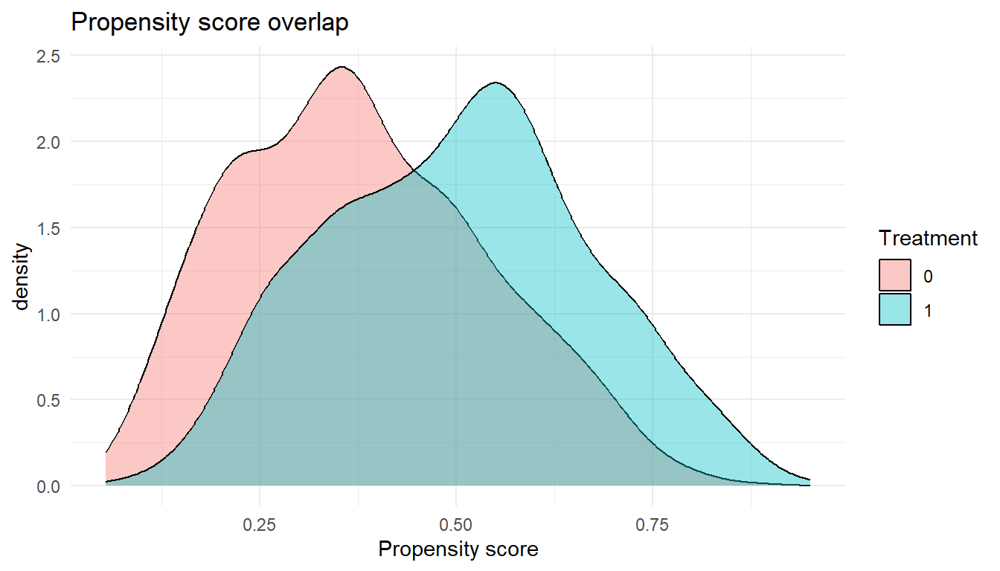
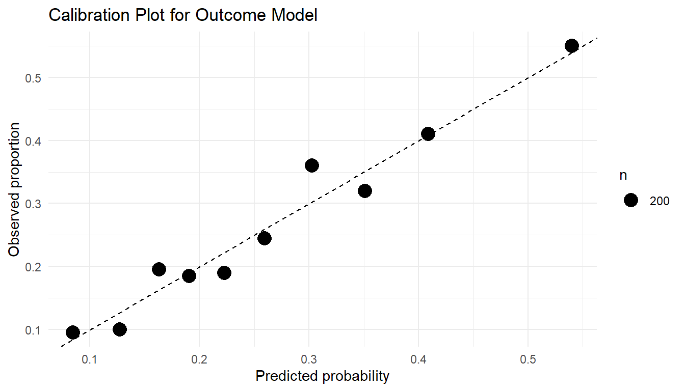
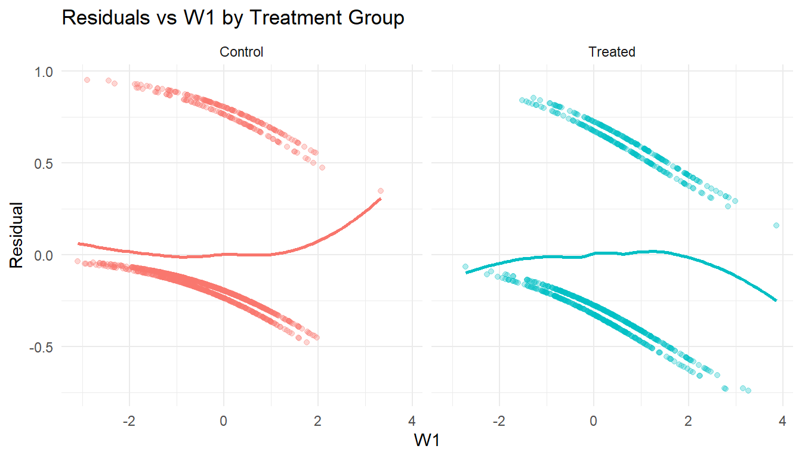

## Negative control outcome analysis
## Y_nc: an outcome known to be unaffected by treatment A
## If the estimated effect is non-null, residual confounding is likely present
if (requireNamespace("tmle", quietly = TRUE)) {
nco_fit <- tmle::tmle(
Y = dat$Y_negative_control,
A = dat$A,
W = dat[, covariates],
Q.SL.library = c("SL.glm", "SL.glmnet", "SL.ranger"),
g.SL.library = c("SL.glm", "SL.glmnet", "SL.ranger")
)
cat("NCO effect estimate:", round(nco_fit$estimates$ATE$psi, 4), "\n")
cat("95% CI:", round(nco_fit$estimates$ATE$CI, 4), "\n")
cat("If this interval excludes zero, unmeasured confounding is likely.\n")
}18 Diagnostics in Targeted Learning
Estimated reading time: 90 minutes
Checking whether a fitted analysis can be believed
If you only read one thing
Diagnostics are decision points, not box-ticking. Organize them around three questions. Are the identification assumptions plausible (overlap, negative controls)? Are the nuisance models actually fitting (Super Learner weights, calibration)? Is the estimator stable (influence-curve outliers, cross-validated TMLE)? A tight confidence interval means little if the propensity scores pile up near 0 or 1. What to do when the answer to one of these is no is the subject of Chapter 19.
You run a targeted maximum likelihood estimation (TMLE) analysis and get an average treatment effect (ATE) of 0.05 with a tight confidence interval. Should you believe it? That depends on a series of diagnostic checks that most applied analyses skip or report only in passing.
Consider what could be going wrong beneath a clean-looking result. The propensity scores might pile up near zero for one treatment group, so the estimate hinges on a handful of heavily weighted observations. The Super Learner might have placed all its weight on the intercept model, a sign that the nuisance functions are not fitting the data. Or the influence curve might carry a few extreme outliers that drive the entire point estimate. Without checking, you cannot tell a credible finding from an artifact.
Semiparametric estimators like TMLE and augmented inverse probability weighting (AIPW) have specific conditions under which they perform well, and specific ways they can fail. Diagnostics help you assess whether those conditions hold in your data.
The chapter closes with a practical workflow for what to check first. Sensitivity analysis, which quantifies how badly an unverifiable assumption would have to fail before the conclusion changes, and estimand adaptation, which is what to do when the answer is “not badly at all”, are taken up in Chapter 19.
Learning objectives
- Distinguish among assumption diagnostics, model diagnostics, and estimator diagnostics
- Distinguish statistical uncertainty (sampling variability) from causal uncertainty (assumption violations)
- Diagnose positivity violations through propensity score analysis, clever covariate inspection, and effective sample size calculations
- Evaluate nuisance model performance using Super Learner diagnostics, calibration, and covariate balance
- Interpret efficient influence function diagnostics for TMLE and AIPW
- Use negative controls to detect residual bias, and implement a negative control analysis in R
- Read longitudinal diagnostics: time-specific positivity, cumulative weights, and sequential double robustness
- Know which diagnostics to run first on a real analysis, and what each one rules out
Causal conclusions depend on the identification assumptions described in Chapter 5. The diagnostics here apply across TMLE, AIPW, inverse probability of treatment weighting (IPTW), longitudinal TMLE, and modified treatment policy estimators.
18.1 A diagnostic framework for targeted learning
Every TMLE or AIPW analysis rests on three layers: identification assumptions (see Chapter 5), nuisance model estimation, and the statistical behavior of the estimator itself. Diagnostics check each layer. This chapter sorts them into three categories that match those layers, plus a fourth, design diagnostics, that can run before any outcome data are seen:
Assumption diagnostics assess whether the identification assumptions (exchangeability, positivity, consistency) are plausible. These are indirect checks: the assumptions themselves are not testable, but their empirical implications can be evaluated. Examples: propensity score overlap, E-values, negative controls.
Model diagnostics assess whether the nuisance functions (\(E[Y \mid A, W]\) and \(P(A \mid W)\)) are well-estimated. Examples: Super Learner cross-validated risk, calibration plots, covariate balance.
Estimator diagnostics assess whether the TMLE or AIPW machinery is behaving as expected. Examples: influence curve distributions, targeting step convergence, sensitivity of the estimate to individual observations.
Design diagnostics are conducted before the outcome data are analyzed, using only treatment and covariate information. Examples: positivity assessment, effective sample size, simulation-based power.
Each category points to an action. If positivity diagnostics reveal severe violations, consider redefining the target population or shifting to a modified treatment policy. If model diagnostics show poor nuisance estimation, expand the Super Learner library. If estimator diagnostics reveal instability, apply truncation or acknowledge that the data cannot support the intended inference. Section 19.4 lays out a structured decision framework for these adaptations.
18.2 Diagnosing identifiability assumptions
The three identification assumptions (exchangeability, positivity, and consistency) connect the causal parameter to the statistical estimand. If any one fails, the estimate loses its causal interpretation no matter which estimator produced it.
None of the three is testable from observed data alone. The diagnostics here work indirectly: they assess plausibility through observable implications, quantify sensitivity to violations, and flag empirical patterns that would be unlikely if the assumptions held.
18.2.1 Exchangeability (no unmeasured confounding)
Exchangeability (\(Y(a) \perp\!\!\!\perp A \mid W\)) asserts that the potential outcomes are independent of treatment assignment conditional on the measured covariates \(W\) (see Chapter 5 for a full treatment). Reviewers, regulators, and scientific audiences question it more than any other assumption, because it can never be verified from the data at hand. The diagnostics below provide indirect evidence for or against it.
18.2.1.1 Conceptual DAG diagnostics
The directed acyclic graph (DAG) is the primary tool for reasoning about exchangeability. A DAG encodes the qualitative causal structure the analyst assumes: which variables cause which others, which are unmeasured, and which causal pathways connect treatment to outcome. It makes the exchangeability assumption explicit by revealing the adjustment set, the variables that, once conditioned on, block every backdoor path from \(A\) to \(Y\).
DAG diagnostics are inherently qualitative and require domain expertise. Build the DAG with subject-matter experts, then interrogate it systematically:
- Are there common causes of \(A\) and \(Y\) that are not included in \(W\)? Each such variable represents a potential source of unmeasured confounding.
- Does the DAG include colliders (consequences of both \(A\) and \(Y\)), and are any of them included in \(W\)? Conditioning on a collider opens a non-causal path and introduces bias.
- Does \(W\) include any mediators (variables on the causal pathway from \(A\) to \(Y\))? Conditioning on a mediator blocks part of the causal effect and changes the estimand from the total effect to a direct effect.
Draw the DAG before any statistical analysis, and revisit it whenever the analysis plan changes. Changes to the covariate adjustment set \(W\) (adding or removing a variable, say) should be justified by reference to the DAG, not by statistical criteria such as significance in a regression model.
Practical DAG review protocol
A structured DAG review with clinical collaborators should proceed as follows:
- Present the DAG with all proposed nodes and edges.
- For each edge, ask whether the collaborator agrees that the causal relationship exists and whether its direction is correct.
- For each variable not included in the DAG, ask whether it could plausibly cause both \(A\) and \(Y\).
- For each variable included in \(W\), ask whether it could be a consequence of \(A\) (which would make it a mediator or collider).
- Document disagreements and note which unmeasured variables are most concerning.
This record becomes the foundation for the sensitivity analyses of Chapter 19.
18.2.1.2 Negative control exposures and outcomes
Negative controls are one of the sharpest empirical tools for detecting violations of exchangeability (Lipsitch, Tchetgen Tchetgen, and Cohen 2010; Hernán and Robins 2025). The logic is falsification: if the identification assumptions hold, certain associations should be absent from the data. Finding those associations present is evidence that the assumptions may be violated.
A negative control outcome (NCO) is an outcome variable \(Y^{nc}\) known, on substantive grounds, not to be causally affected by \(A\) yet sharing the same confounding structure as the primary outcome \(Y\). Estimate the effect of \(A\) on \(Y^{nc}\) with the same adjustment set \(W\) and the same estimation procedure, and a non-null association is consistent with unmeasured confounding. The unmeasured confounder that biases the primary analysis biases the negative control analysis too, and since \(A\) has no true effect on \(Y^{nc}\), any detected association must come from bias.
A negative control exposure (NCE) is a treatment variable \(A^{nc}\) that is known not to causally affect \(Y\), but that shares the same confounding structure as the primary treatment \(A\). Estimating the effect of \(A^{nc}\) on \(Y\) using the same methods provides an analogous falsification test.
Choosing negative controls requires careful scientific reasoning. The NCO must be plausibly unaffected by \(A\) yet share the confounding structure of the primary outcome. In pharmacoepidemiology, a common NCO is an outcome that occurs before treatment initiation in a new-user design. Another is an outcome in an organ system unrelated to the drug’s mechanism of action but tied to the same health-seeking behaviors that drive treatment selection. The whole analysis rests on the assumption that \(A\) does not affect \(Y^{nc}\). If that assumption is wrong, a null finding on the NCO does not validate the primary analysis, and a non-null finding does not necessarily indicate confounding.
Negative controls can also be embedded in a formal bias-correction framework. Proximal causal inference, developed by Tchetgen Tchetgen and colleagues (Miao, Geng, and Tchetgen Tchetgen 2018), treats negative control variables as proxies for the unmeasured confounder and uses them to estimate and remove the bias, not only to detect it (Chapter 28). These methods need an extra assumption, that the negative control variables satisfy certain conditional independence relations with respect to the unmeasured confounder, but when it holds they correct the bias instead of only flagging it.
18.2.1.3 Structural versus random confounding
One conceptual distinction bears directly on the choice of diagnostic strategy: structural versus random confounding. Structural confounding arises when the data-generating process includes a common cause of \(A\) and \(Y\) that is not measured and cannot be addressed by the study design. This is the classical unmeasured confounding problem, and it produces systematic bias that does not diminish as the sample grows. Sensitivity analyses and negative controls are the right diagnostic tools here.
Random confounding is different. It arises in finite samples when the assignment of treatment happens to produce imbalances in prognostic factors, even though no systematic confounding mechanism exists. In a randomized trial, randomization inference or precision-improving covariate adjustment handles it. In observational studies the distinction is less clean, but it still matters. If the adjustment set \(W\) is rich enough to capture all common causes of \(A\) and \(Y\), then any residual imbalance is random, not structural, and the bias vanishes asymptotically.
The practical lesson is that not every covariate imbalance is evidence of confounding bias. Standardized mean differences between treatment groups measure the imbalance in the observed sample, but nonzero differences are expected even when exchangeability holds, especially in small samples. The question is whether the imbalances look like random variation or whether they reflect systematic confounding the adjustment set does not address.
18.2.1.4 Measurement error versus omitted confounders
A second distinction relevant to exchangeability diagnostics separates unmeasured confounders (variables entirely absent from the data) from mismeasured confounders (variables present but recorded with error). Both can produce bias, but the mechanisms and the fixes differ.
Measurement error in a confounder \(W_j\) weakens how much conditioning on \(W_j\) removes confounding. Even if all common causes of \(A\) and \(Y\) are present in the data, substantial measurement error can leave residual confounding that mimics an omitted variable. Non-differential misclassification of a binary confounder, for instance, makes the adjustment incomplete: the adjusted estimate moves back toward the crude, unadjusted one, leaving residual confounding in the treatment effect estimate.
Diagnostics for measurement error are limited without validation data. When validation data are available (a gold-standard measurement on a subsample), regression calibration or multiple imputation for measurement error can be applied (Chapter 20). When they are not, the analyst should report the likely direction and magnitude of the induced bias through sensitivity analyses that vary the assumed misclassification rates.
18.2.1.5 Time-varying confounding in longitudinal settings
In longitudinal settings with time-varying treatment, exchangeability takes a sequential form: at each time point \(t\), the potential outcomes must be independent of the treatment at time \(t\), conditional on the measured covariate and treatment history up to that point. This sequential version is both stronger and harder to assess than its point-treatment counterpart, because the set of potential confounders grows with the number of time points, and because time-varying confounders may themselves be affected by prior treatment.
Diagnostics for time-varying confounding have to grapple with a specific difficulty: a variable \(L_t\) can be, at once, a confounder of the treatment-outcome relationship at time \(t+1\) and a mediator of the treatment effect at time \(t\). Standard regression adjustment cannot handle this dual role without introducing bias; longitudinal TMLE (L-TMLE), IPTW with stabilized weights, and the g-computation formula are built to address it. The diagnostic question is whether the measured time-varying covariates capture the time-varying confounding structure. Assess this by checking whether the DAG at each time point includes all relevant common causes, and by running negative control analyses with time-varying negative control outcomes to detect residual time-varying confounding.
18.2.2 Positivity and overlap
Positivity requires that every unit has a nonzero probability of receiving each treatment level conditional on its covariates (Westreich and Cole 2010). Chapter 13 covers it in depth; this section recaps the core checks and adds two estimator-level ones, based on the clever covariate and the efficient influence function. Unlike exchangeability, positivity leaves fingerprints in the data: we can check whether certain covariate profiles are observed under only one treatment arm. Finite-sample diagnostics can detect practical positivity violations (regions where the estimated probability of treatment is near zero), though not structural violations (regions where the true probability is exactly zero).
18.2.2.1 Propensity score distribution diagnostics
The most basic positivity diagnostic is the distribution of estimated propensity scores \(\hat{g}(1 \mid W_i) = \hat{P}(A = 1 \mid W_i)\) across the study population (Rosenbaum and Rubin 1983). In the ideal case, the propensity score distributions in the treated and untreated groups overlap substantially, with neither group piling up near 0 or 1. When the two distributions separate, there are regions of the covariate space where one treatment is strongly preferred, and counterfactual estimation there becomes unreliable.
The executable example below simulates data and produces the overlap diagnostic in Figure 18.1.
Show code
set.seed(2025)
n <- 2000
W1 <- rnorm(n); W2 <- rbinom(n, 1, 0.4)
A <- rbinom(n, 1, plogis(-0.5 + 0.8 * W1 + 0.5 * W2))
Y <- rbinom(n, 1, plogis(-1.5 + 0.5 * A + 0.6 * W1 + 0.3 * W2))
dat <- data.frame(W1, W2, A, Y)
dat$ps <- predict(glm(A ~ W1 + W2, family = binomial, data = dat), type = "response")
library(tidyverse)
ggplot(dat, aes(x = ps, fill = factor(A))) +
geom_density(alpha = 0.4) +
labs(x = "Propensity score", fill = "Treatment", title = "Propensity score overlap") +
theme_minimal()
Beyond density plots, examine the tails of the propensity score distribution with particular care. The tails are where positivity violations concentrate, and they exert outsized influence on weighted estimators. A propensity score of 0.01 produces an inverse probability weight of 100, so a single observation effectively stands in for 100 individuals in the pseudo-population. The fraction of observations with propensity scores below a threshold (0.025 or 0.05, say) or above its complement gives a direct summary of how severe the practical violations are.
18.2.2.2 Effective sample size under weighting
Extreme inverse probability weights shrink the effective sample size (ESS), the number of independent observations that contribute meaningfully to the estimate. Even when the nominal sample size is large, the effective sample size under weighting can be much smaller, which drives up variance and undermines inference.
The effective sample size for IPTW can be computed as:
\[ n_{\text{eff}} = \frac{\left(\sum_{i=1}^{n} w_i\right)^2}{\sum_{i=1}^{n} w_i^2} \]
where \(w_i\) are the inverse probability weights. When all weights are equal, \(n_{\text{eff}} = n\). When weights are highly variable, \(n_{\text{eff}}\) can fall well below \(n\). An effective sample size that is a small fraction of the nominal one (below 50%, say) is a strong signal that positivity violations are eroding the precision of the analysis.
Using the simulated data from above, we can compute the effective sample size:
dat$w <- ifelse(dat$A == 1, 1/dat$ps, 1/(1 - dat$ps))
ess <- sum(dat$w)^2 / sum(dat$w^2)
cat("Nominal sample size:", nrow(dat), "\n")
#> Nominal sample size: 2000
cat("Effective sample size:", round(ess, 0), "\n")
#> Effective sample size: 165618.2.2.3 Clever covariate diagnostics for TMLE
In TMLE, positivity violations manifest directly through the clever covariate (also known as the fluctuation covariate). For the average treatment effect, the clever covariate for observation \(i\) takes the form:
\[ H(A_i, W_i) = \frac{I(A_i = 1)}{\hat{g}(1 \mid W_i)} - \frac{I(A_i = 0)}{1 - \hat{g}(1 \mid W_i)} \]
When propensity scores approach the boundaries, the clever covariate grows without bound, and a handful of observations can dominate the TMLE targeting step. Examine the distribution of \(|H(A_i, W_i)|\) and flag observations with unusually large magnitudes. There is no universal threshold; what counts as “large” depends on the sample size, the outcome scale, and the degree of practical positivity. A more informative approach than a single cutoff is to look at observations across several thresholds (\(|H| > 10\), \(> 20\), \(> 50\)) and ask whether they drive the targeting step or inflate the variance estimate. Large \(|H|\) values mean the estimate leans heavily on a few observations with extreme propensity scores, a symptom of practical positivity violations rather than a modeling error as such.
## Clever covariate diagnostics for TMLE
H1 <- dat$A / dat$ps ## treated component
H0 <- (1 - dat$A) / (1 - dat$ps) ## control component
H <- H1 - H0 ## clever covariate for ATE
cat("Clever covariate summary:\n")
#> Clever covariate summary:
cat(" Range:", round(range(H), 2), "\n")
#> Range: -8.67 14.27
cat(" Mean:", round(mean(H), 4), "\n")
#> Mean: -0.0027
cat(" SD:", round(sd(H), 2), "\n")
#> SD: 2.19
cat(" |H| > 10:", sum(abs(H) > 10), "observations\n")
#> |H| > 10: 1 observations
cat(" |H| > 20:", sum(abs(H) > 20), "observations\n")
#> |H| > 20: 0 observations
cat(" |H| > 50:", sum(abs(H) > 50), "observations\n")
#> |H| > 50: 0 observations
cat(" Max |H|:", round(max(abs(H)), 1), "\n")
#> Max |H|: 14.3
## Identify and inspect observations with extreme clever covariates
extreme_idx <- which(abs(H) > 20)
if (length(extreme_idx) > 0) {
cat("\nObservations with |H| > 20:\n")
print(dat[extreme_idx, c("A", "ps", "W1", "W2")])
}The clever covariate diagnostic beats a propensity score histogram alone because it reflects, directly, the influence each observation exerts on the TMLE update. An observation with a propensity score of 0.02 in the treated group produces \(H = 1/0.02 = 50\), so in the targeting step it carries 25 times the weight of an observation with a propensity score of 0.50 (\(H = 2\)). If only a handful of such observations exist, they, not the full sample, effectively determine the TMLE estimate.
18.2.2.4 Diagnostics based on EIF magnitude
The efficient influence function (EIF) provides an estimator-independent diagnostic for positivity. For the ATE, the EIF evaluated at the estimated nuisance functions takes the form:
\[ \widehat{D}(O_i) = \frac{I(A_i = 1)}{\hat{g}(1 \mid W_i)}\left(Y_i - \hat{\bar{Q}}(1, W_i)\right) - \frac{I(A_i = 0)}{1 - \hat{g}(1 \mid W_i)}\left(Y_i - \hat{\bar{Q}}(0, W_i)\right) + \hat{\bar{Q}}(1, W_i) - \hat{\bar{Q}}(0, W_i) - \hat{\psi} \]
Observations with large \(|\widehat{D}(O_i)|\) exert outsized influence on the estimate. When the magnitude is large because of near-zero propensity scores (the \(1/\hat{g}\) terms dominate), the problem is positivity. When it is large because of poor outcome model fit (the residual terms \(Y_i - \hat{\bar{Q}}\) are large), the problem is the model. Decomposing the source of large EIF values tells the analyst which of the two is at work.
## EIF-based positivity diagnostics
## After fitting TMLE, inspect the influence curve
IC <- tmle_fit$estimates$ATE$IC
cat("Influence curve diagnostics:\n")
cat(" Mean:", round(mean(IC), 6), "(should be near 0)\n")
cat(" SD:", round(sd(IC), 4), "\n")
cat(" Skewness:", round(moments::skewness(IC), 3), "\n")
cat(" Kurtosis:", round(moments::kurtosis(IC), 3), "\n")
cat(" Max |IC|:", round(max(abs(IC)), 2), "\n")
cat(" |IC| > 3*SD:", sum(abs(IC) > 3 * sd(IC)), "observations\n")
## Ratio of max IC to mean IC - a large ratio signals instability
cat(" Max/SD ratio:", round(max(abs(IC)) / sd(IC), 1), "\n")18.2.2.5 Structural versus practical positivity violations
A structural positivity violation occurs when the true probability of treatment is exactly zero for some subpopulation: \(P(A = 1 \mid W = w) = 0\) for a set of \(w\) values that has positive probability. This arises, for example, when a medication is contraindicated for a specific patient subgroup, or when a treatment did not exist during part of the study period. Structural violations cannot be resolved by increasing the sample size; the causal effect for the affected subgroup is not identified from the data.
A practical positivity violation occurs when the true probability of treatment is nonzero but very small, so estimation is unreliable in finite samples. The estimated propensity scores sit near zero not because treatment is impossible but because it is rare in certain covariate strata. Simplifying the propensity score model (using fewer covariates) can sometimes ease a practical violation, but this trades positivity for potential confounding bias.
The distinction matters for the fix. Structural violations call for changing the estimand: restricting the target population to exclude the affected subgroup, or switching to an estimand that does not require extrapolation into unsupported regions. Practical violations may yield to truncation, stabilized weights, or more flexible modeling, though each of these introduces its own bias and should travel with a sensitivity analysis.
18.2.2.6 Weight truncation rules and their implications
Weight truncation (also called weight clipping or trimming) is the most common way to ease practical positivity violations (Crump et al. 2009; Hernán and Robins 2025). The analyst caps the inverse probability weights at some upper bound, or equivalently restricts the estimated propensity scores to lie within \([\delta, 1 - \delta]\) for some small \(\delta > 0\). TMLE implements this through the gbound parameter; IPTW applies it directly to the computed weights.
Truncation buys lower variance at the price of bias. The bias appears because truncation quietly changes the estimand: the analyst is no longer targeting the ATE for the full population but for a population where extreme propensity scores have been modified. How large the bias gets depends on the share of observations affected and on the treatment effect heterogeneity in the truncated region.
Using the simulated data, a simple truncation sensitivity analysis computes the IPW estimate at several thresholds without the tmle package:
truncation_levels <- c(0.01, 0.02, 0.05, 0.10)
results <- sapply(truncation_levels, function(delta) {
ps_trunc <- pmax(delta, pmin(1 - delta, dat$ps))
w_trunc <- ifelse(dat$A == 1, 1/ps_trunc, 1/(1 - ps_trunc))
risk1 <- sum(w_trunc * dat$Y * dat$A) / sum(w_trunc * dat$A)
risk0 <- sum(w_trunc * dat$Y * (1 - dat$A)) / sum(w_trunc * (1 - dat$A))
risk1 - risk0
})
data.frame(truncation = truncation_levels, ATE = round(results, 4))
#> truncation ATE
#> 1 0.01 0.0785
#> 2 0.02 0.0785
#> 3 0.05 0.0785
#> 4 0.10 0.0792If the estimate is stable across truncation levels, positivity is not a major concern. If it changes substantially, the analyst should report the range of estimates and consider whether the full-population ATE is a credible target.
18.2.2.7 Estimand redefinition and alternative interventions
When positivity diagnostics reveal severe violations, the most principled response is often to redefine the estimand rather than reach for truncation heuristics. Several alternatives avoid or ease positivity problems by construction.
Restricted population ATE. The analyst restricts the target population to the subset where positivity holds, such as the region where \(\delta \leq \hat{g}(1 \mid W) \leq 1 - \delta\). This changes the causal question from “what is the effect for the whole population?” to “what is the effect for the subpopulation where both treatments are plausible?” The restricted ATE is often more credible than a truncated full-population estimate, because it says out loud what the data can and cannot support.
Modified treatment policies (MTPs). Rather than comparing the counterfactual outcomes under treatment versus no treatment (a static intervention), modified treatment policies define the intervention as a shift in the natural value of treatment. For a continuous exposure \(A\), an MTP might define the intervention as \(d(A, W) = A - \delta\), reducing each individual’s exposure by a fixed amount \(\delta\). For a binary treatment, an MTP might define the intervention as increasing or decreasing the probability of treatment by a specified amount. MTPs tend to respect the support of the data, because the intervention is defined relative to the observed treatment instead of requiring extrapolation to a treatment level that may be implausible for some individuals. The lmtp R package implements estimation for MTPs.
Stochastic interventions. Instead of assigning each individual a specific treatment level, stochastic interventions assign each individual a probability distribution over treatment levels. “Increase the probability of treatment by 10 percentage points for everyone” is one such intervention. Defined carefully, a stochastic intervention stays within the support of the observed treatment mechanism, sidestepping positivity violations by construction.
Positivity diagnostics across estimators
Different estimators are affected by positivity violations in different ways.
IPTW is the most sensitive to positivity violations because it relies entirely on the treatment model \(g\). Extreme weights directly destabilize the estimate, and the effective sample size can become very small. IPTW with unstabilized weights is particularly vulnerable; stabilized weights \(\text{sw}_i = P(A = a_i) / P(A = a_i \mid W_i)\) reduce variance but do not eliminate the underlying problem.
AIPW (augmented IPW) is less sensitive than IPTW because the augmentation term \(\hat{\bar{Q}}(a, W) - \hat{\psi}\) provides a “bias correction” that partially compensates for extreme weights when the outcome model is well-specified. However, when both \(g\) and \(\bar{Q}\) are poorly estimated in the low-support region, AIPW can be even more unstable than IPTW.
TMLE dampens positivity violations through its bounded loss function (logistic fluctuation for bounded outcomes), which constrains the update step and keeps the estimate from being dominated by extreme clever covariate values. It is not immune, though: when propensity scores sit near the boundary, the targeting step may fail to converge, or the resulting estimate may have high variance.
L-TMLE in longitudinal settings faces compounded positivity challenges, because the cumulative treatment mechanism is the product of time-specific mechanisms. Even moderate violations at each time point can produce extreme cumulative weights that destabilize the estimate.
In every case the diagnostic approach is the same: examine the distribution of the relevant weights or clever covariates, compute effective sample sizes, and probe the sensitivity of the estimate to truncation. The thresholds for concern differ across estimators, but the logic does not.
18.2.3 Consistency and intervention definition
Consistency requires that the observed outcome for an individual who received treatment \(a\) equals that individual’s potential outcome under treatment \(a\) (see Chapter 5). This encodes a substantive requirement: the intervention corresponding to “setting \(A = a\)” must be well-defined, and the treatment as recorded in the data must correspond to this intervention without ambiguity.
18.2.3.1 Multiple versions of treatment
Consistency fails when the treatment variable \(A\) conflates several distinct interventions that may act differently on the outcome. This is the problem of “multiple versions of treatment”; the assumption that rules it out is called treatment-variation irrelevance. If \(A\) indicates whether a patient received a particular drug class, but different drugs within the class have different efficacies, then the potential outcome \(Y(A = 1)\) is not uniquely defined: it depends on which specific drug the patient received.
Diagnostics for treatment versioning start with a careful look at the treatment definition. Ask: conditional on \(A = a\) and \(W = w\), is the treatment received homogeneous across individuals, or does it vary in ways that could affect the outcome? If it is heterogeneous, consider whether refining the treatment variable (separating a drug class into individual drugs) captures the heterogeneity, or whether it should be treated as residual variability.
Empirically, check whether the effect estimate changes when the treatment definition is refined or coarsened. If subdividing \(A = 1\) into \(A = 1a\) and \(A = 1b\) yields substantially different estimates, the original variable conflates distinct interventions, and consistency for the coarser variable may not hold in any meaningful sense.
18.2.3.2 Static, dynamic, and stochastic interventions
The nature of the intervention implicit in the estimand has important implications for both consistency and positivity. A static intervention assigns a fixed treatment level to all individuals (e.g., “set \(A = 1\) for everyone”). A dynamic intervention assigns treatment as a function of individual covariates (e.g., “treat if \(W_1 > c\), do not treat otherwise”). A stochastic intervention assigns a probability distribution over treatment levels that may depend on covariates.
Each type of intervention carries its own consistency requirements. Static interventions require the single treatment level \(a\) to be well-defined and implementable for everyone in the target population. Dynamic interventions require the rule \(d(W)\) to be well-defined and the treatment levels it assigns to be feasible for each individual given their covariates. Stochastic interventions and modified treatment policies ask the least, because they never require any individual to receive a treatment level that would not occur naturally.
Verify that the chosen intervention type fits both the data structure and the scientific question. If the estimand involves a static intervention but the data include individuals for whom that treatment level would never be prescribed (violating both consistency and positivity), consider a dynamic or stochastic intervention that respects the natural constraints of the data-generating process.
18.2.3.3 Alignment between estimand and data structure
A final consistency diagnostic concerns the alignment between the formal estimand and the actual data structure. Verify that the treatment variable in the data corresponds to the intervention described in the estimand, that the outcome is measured at the time point the estimand specifies, and that the covariates \(W\) are measured before treatment assignment. Misalignment (conditioning on post-treatment variables, or measuring the outcome before the treatment could plausibly affect it) violates the causal framework and invalidates the analysis no matter which estimation method is used.
In longitudinal settings, alignment diagnostics require checking the temporal ordering at each time point: covariates \(L_t\) must be measured after treatment \(A_{t-1}\) and before treatment \(A_t\), and the outcome \(Y\) must be measured after the final treatment. Violations can introduce immortal time bias, reverse causation, or conditioning on post-treatment variables, any of which undermines the causal interpretation.
18.3 Nuisance model diagnostics
The nuisance functions, the outcome regression \(\bar{Q}(A, W) = E[Y \mid A, W]\) and the treatment mechanism \(g(A \mid W) = P(A \mid W)\), are intermediate quantities we estimate on the way to the causal parameter. Their quality drives the finite-sample performance of TMLE, AIPW, and IPTW. Poor nuisance estimation can produce biased causal estimates, inflated variance, and invalid confidence intervals, even when the identification assumptions hold perfectly.
How much nuisance quality matters depends on the estimator. For IPTW, only \(g\) matters. For parametric g-computation, only \(\bar{Q}\) matters. For the doubly robust estimators (TMLE, AIPW), consistency requires only that at least one of the two be consistently estimated, and efficiency arrives when both are estimated at sufficiently fast rates.
Double robustness does not free you from nuisance function diagnostics. In finite samples, the quality of both functions affects bias, variance, and coverage. Diagnostics supply the evidence needed to judge whether the asymptotic theory is a reliable guide to what happens at your sample size.
When machine learning methods estimate the nuisance functions, valid inference usually requires either cross-fitting or a cross-validated TMLE variant. Without cross-fitting, the overfitting behavior of flexible learners can break the asymptotic linearity of the causal estimator, producing confidence intervals with incorrect coverage even when the nuisance functions are estimated consistently.
18.3.1 Super Learner diagnostics
The Super Learner is an ensemble method that combines predictions from a library of candidate algorithms, using cross-validation to pick the optimal convex combination (Laan, Polley, and Hubbard 2007). It is the recommended approach for nuisance function estimation in targeted learning because it comes with an asymptotic optimality guarantee. As the sample grows, the Super Learner performs as well as the oracle: the best possible convex combination of the candidate learners. That guarantee is asymptotic, and it does not remove the need for diagnostics in finite samples. Super Learner performance hinges on the composition of the candidate library, the cross-validation scheme, and the properties of the data.
18.3.1.1 Cross-validated risk comparisons
The most basic Super Learner diagnostic compares cross-validated risk across candidate learners and the ensemble. For each candidate algorithm \(k\) in the library, the cross-validated risk \(\hat{R}_{CV}^{(k)}\) is the average loss on held-out validation folds. For continuous outcomes the loss is typically mean squared error; for binary outcomes it is the negative log-likelihood (cross-entropy). Report the ensemble risk \(\hat{R}_{CV}^{SL}\) alongside the individual learner risks.
## Super Learner diagnostics for the outcome regression
library(SuperLearner)
## Define a diverse library
SL.library <- c("SL.glm", "SL.glmnet", "SL.ranger",
"SL.xgboost", "SL.earth", "SL.nnet")
## Fit Super Learner for Q(A,W) = E[Y | A, W]
sl_Q <- SuperLearner(
Y = dat$Y,
X = dat[, c("A", "W1", "W2", "W3")],
SL.library = SL.library,
family = gaussian(),
cvControl = list(V = 10)
)
## Cross-validated risk for each learner
cat("== Cross-Validated Risk (MSE) ==\n")
cv_risks <- data.frame(
Learner = c(SL.library, "SuperLearner"),
CV_Risk = c(sl_Q$cvRisk, min(sl_Q$cvRisk)),
Coefficient = c(sl_Q$coef, NA)
)
cv_risks <- cv_risks[order(cv_risks$CV_Risk), ]
print(cv_risks, row.names = FALSE, digits = 4)
## Ratio of ensemble risk to best single learner risk
discrete_SL_risk <- min(sl_Q$cvRisk)
cat("\nDiscrete SL risk:", round(discrete_SL_risk, 4), "\n")
cat("Ensemble improvement:",
round((1 - sl_Q$cvRisk[which.min(sl_Q$cvRisk)] / discrete_SL_risk) * 100, 1),
"%\n")Several patterns in the cross-validated risk comparison are diagnostically informative:
- Ensemble risk much lower than any individual learner: the library captures complementary aspects of the data-generating process, and the ensemble benefits from combining them.
- A single learner dominates (receiving nearly all the weight): the ensemble reduces to approximately the discrete Super Learner. This may mean the dominant learner is clearly superior, or that the library lacks sufficient diversity.
- All learners have similar risk: the outcome surface may be relatively simple, or the sample size may be too small to discriminate among learners.
Compare the continuous Super Learner (the convex combination with optimized weights) to the discrete Super Learner (the single best learner chosen by cross-validation). When the continuous version improves meaningfully on the discrete one, the ensemble is earning real gains from combining predictions. When the two are essentially equivalent, reporting the simpler discrete Super Learner can buy transparency at no real cost.
18.3.1.2 Learner weight distributions
The Super Learner coefficients, the weights on each candidate algorithm in the convex combination, show which modeling strategies are contributing to the ensemble. Reporting them is a minimum diagnostic requirement for any analysis that uses the Super Learner for nuisance estimation.
## Learner weight diagnostics
cat("== Super Learner Coefficients (Q model) ==\n")
coef_df <- data.frame(
Learner = SL.library,
Weight = round(sl_Q$coef, 4)
)
coef_df <- coef_df[order(-coef_df$Weight), ]
print(coef_df, row.names = FALSE)
## Effective number of learners (analogous to effective sample size)
weights <- sl_Q$coef
eff_n_learners <- sum(weights)^2 / sum(weights^2)
cat("\nEffective number of learners:", round(eff_n_learners, 1),
"out of", length(SL.library), "\n")An effective number of learners close to 1 means a single algorithm dominates the ensemble. That is not necessarily a problem (one learner may be clearly best for this problem), but it warrants a look.
If the dominant learner is highly flexible (a heavily tuned gradient boosting model, say), check that its cross-validated risk is not overly optimistic from information leakage or insufficient regularization. If the dominant learner is simple (main-terms logistic regression), the outcome surface may really be simple, or the sample may be too small for flexible learners to pull ahead.
Examine the coefficient distribution separately for \(\bar{Q}\) and \(g\), since the two functions can differ in complexity. In many studies, simple learners capture the propensity score model well, because treatment decisions turn on a handful of strong predictors, while the outcome regression needs more flexible modeling.
18.3.1.3 Library sensitivity analysis
A library sensitivity analysis asks whether the causal estimate is robust to changes in the Super Learner library. Fit the full causal estimator (TMLE or AIPW) under several library specifications (parametric learners only, tree-based learners only, the full library, and the full library plus highly adaptive lasso) and compare the resulting estimates. Close agreement across specifications is evidence that the nuisance function estimates are accurate across a range of modeling strategies. Divergence means the causal conclusion depends on the modeling choices, which undermines confidence in any single estimate.
## Library sensitivity analysis
libraries <- list(
"Parametric only" = c("SL.glm", "SL.glmnet"),
"Tree-based only" = c("SL.ranger", "SL.xgboost"),
"Full library" = c("SL.glm", "SL.glmnet", "SL.ranger",
"SL.xgboost", "SL.earth", "SL.nnet"),
"Full + HAL" = c("SL.glm", "SL.glmnet", "SL.ranger",
"SL.xgboost", "SL.earth", "SL.nnet", "SL.hal9001")
)
lib_results <- data.frame(
Library = names(libraries),
ATE = NA_real_,
SE = NA_real_,
CI_lower = NA_real_,
CI_upper = NA_real_
)
for (i in seq_along(libraries)) {
fit_lib <- tmle::tmle(
Y = dat$Y, A = dat$A, W = dat[, c("W1", "W2", "W3")],
Q.SL.library = libraries[[i]],
g.SL.library = libraries[[i]]
)
lib_results$ATE[i] <- fit_lib$estimates$ATE$psi
lib_results$SE[i] <- sqrt(fit_lib$estimates$ATE$var.psi)
lib_results$CI_lower[i] <- fit_lib$estimates$ATE$CI[1]
lib_results$CI_upper[i] <- fit_lib$estimates$ATE$CI[2]
}
cat("== Library Sensitivity Analysis ==\n")
print(lib_results, row.names = FALSE, digits = 4)
cat("\nRange of ATE estimates:",
round(diff(range(lib_results$ATE)), 4), "\n")This analysis answers a different question from the cross-validated risk comparison. The risk comparison identifies which learners fit the data best. The library sensitivity analysis identifies whether the causal estimate is sensitive to the choice of learners. The cross-validated risk can be similar across libraries (all of them fit the data reasonably well) while the causal estimates diverge (the libraries extrapolate differently in the regions of covariate space that matter for the causal contrast). The reverse is also possible: cross-validated risks that differ substantially while the causal estimates agree, because the differences in fit land in regions irrelevant to the causal parameter.
If the estimates are similar across libraries, the result does not hinge on the library choice. If they diverge substantially, the nuisance function estimation is unstable and warrants a closer look.
18.3.1.4 Overfitting detection
Overfitting happens when a learner captures noise in the training data rather than the underlying function, giving predictions that look good in-sample but generalize poorly. Cross-validation is a natural safeguard within the Super Learner, but it does not remove the risk entirely, especially when the sample is small relative to the complexity of the learners.
The main diagnostic for overfitting is the gap between training risk and cross-validated risk for each candidate learner. A large gap means the learner is fitting noise. For parametric models such as logistic regression the gap is usually small. For highly flexible learners such as random forests with very deep trees or neural networks with many hidden units, it can be substantial.
## Overfitting diagnostic: training risk vs CV risk
## Requires refitting each learner on the full training set
train_risks <- numeric(length(SL.library))
for (k in seq_along(SL.library)) {
pred_train <- predict(sl_Q$fitLibrary[[k]],
newdata = dat[, c("A", "W1", "W2", "W3")])
if (is.list(pred_train)) pred_train <- pred_train$pred
train_risks[k] <- mean((dat$Y - pred_train)^2)
}
overfit_df <- data.frame(
Learner = SL.library,
Train_Risk = round(train_risks, 4),
CV_Risk = round(sl_Q$cvRisk, 4),
Ratio = round(sl_Q$cvRisk / train_risks, 2)
)
cat("== Overfitting Diagnostics ==\n")
print(overfit_df, row.names = FALSE)
cat("\nRatio >> 1 indicates substantial overfitting.\n")When overfitting shows up, there are a few options. The most direct is to add regularized variants of the offending learner to the library (replacing a default random forest with one that has a minimum node size constraint). Another is to drop the overfitting learner altogether, though that may cost the library some capacity to capture complex patterns. The Super Learner’s cross-validation will naturally downweight overfitting learners in the ensemble, but confirm that it is happening by examining the learner coefficients.
18.3.1.5 Cross-validation scheme and screening
The number of cross-validation folds \(V\) affects both the bias and variance of the Super Learner. With \(V = 10\) (the default), each learner is trained on 90% of the data and evaluated on 10%, giving a reasonably unbiased estimate of out-of-sample risk. Smaller values (\(V = 5\)) cut computation but can bias the risk estimates, since each learner sees less data. Larger values (\(V = 20\) or leave-one-out) reduce bias but raise variance and computational cost.
For small samples (\(n < 200\)), ask whether \(V = 10\) leaves too few observations in each validation fold for stable risk estimation. When it does, \(V = 5\) or even \(V = 3\) may serve better, with the understanding that the risk estimates will be noisier. For very large samples, pushing \(V\) beyond 10 buys little and is rarely worth it.
Variable screening within the Super Learner, a data-adaptive step that selects a subset of covariates before fitting each candidate learner, can help when the covariate space is high-dimensional. It also adds a source of variability that the cross-validation must absorb. Perform the screening within each fold, not on the full dataset before cross-validation, or the risk estimate will be optimistically biased. The SuperLearner package supports this by pairing learners with screening wrappers in SL.library (for example c("SL.glm", "screen.corP")), which run inside the cross-validation loop.
18.3.2 Outcome regression diagnostics
The outcome regression \(\bar{Q}(A, W) = E[Y \mid A, W]\) is used directly by TMLE (as the initial estimate that is then targeted) and by AIPW (as the augmentation term). IPTW does not use it, but augmenting IPTW with an outcome regression, which turns it into AIPW, can improve efficiency. Outcome regression diagnostics therefore matter for all the major estimators, in different ways.
18.3.2.1 Calibration
Calibration measures whether the outcome model’s predicted values line up with the observed outcomes. A well-calibrated model satisfies \(E[Y \mid \hat{\bar{Q}}(A, W) = q] = q\) for all \(q\) in the range of the predictions. Calibration is a weaker requirement than overall model fit (a well-calibrated model can still have high variance), but miscalibration is an especially worrying form of misspecification, because it signals systematic bias in the predicted values.
For binary outcomes, assess calibration by splitting the predicted probabilities into deciles, computing the observed event rate within each decile, and plotting observed against predicted rates. A perfectly calibrated model produces points along the 45-degree line. Systematic departure from it flags miscalibration: predictions that run too high or too low in specific risk strata.
Show code
## Calibration plot for binary outcome
## Assumes Q_pred contains predicted probabilities E[Y|A,W]
calibration_diagnostic <- function(Y, Q_pred, n_bins = 10) {
bins <- cut(Q_pred, breaks = quantile(Q_pred, probs = seq(0, 1, 1/n_bins)),
include.lowest = TRUE)
cal_df <- data.frame(
bin = levels(bins),
predicted = tapply(Q_pred, bins, mean),
observed = tapply(Y, bins, mean),
n = tapply(Y, bins, length)
)
## Calibration slope and intercept
cal_model <- glm(Y ~ qlogis(pmin(pmax(Q_pred, 1e-6), 1 - 1e-6)),
family = binomial,
data = data.frame(Y = Y, Q_pred = Q_pred))
cal_intercept <- coef(cal_model)[1]
cal_slope <- coef(cal_model)[2]
cat("Calibration intercept:", round(cal_intercept, 3),
"(ideal = 0)\n")
cat("Calibration slope:", round(cal_slope, 3),
"(ideal = 1)\n")
library(ggplot2)
ggplot(cal_df, aes(x = predicted, y = observed)) +
geom_point(aes(size = n)) +
geom_abline(intercept = 0, slope = 1, linetype = "dashed") +
labs(x = "Predicted probability",
y = "Observed proportion",
title = "Calibration Plot for Outcome Model") +
theme_minimal()
}Show code
# Fit a simple outcome model and check how well its predicted risks are calibrated
Q_pred <- predict(glm(Y ~ A + W1 + W2, family = binomial, data = dat),
type = "response")
calibration_diagnostic(dat$Y, Q_pred)
#> Calibration intercept: 0 (ideal = 0)
#> Calibration slope: 1 (ideal = 1)
For continuous outcomes, assess calibration by plotting predicted against observed values with a smoothed regression line. The slope should be about 1 and the intercept about 0. Substantial departure means the outcome model is systematically over- or under-predicting in certain regions.
Calibration diagnostics matter especially for TMLE. The targeting step removes the first-order bias of the initial outcome regression, but the bias that remains, the second-order remainder described in Section 18.4, still grows with the outcome model’s error. Double robustness protects against misspecification of \(\bar{Q}\) when \(g\) is correctly specified, but the finite-sample performance of the estimator still improves substantially when \(\bar{Q}\) is well-calibrated.
18.3.2.2 Residual analysis
Residual analysis for the outcome regression follows the same principles as for any regression model, with one caveat: the goal is an outcome model well-specified enough to support the causal estimator, rather than the best possible prediction of \(Y\). Examine the residuals \(e_i = Y_i - \hat{\bar{Q}}(A_i, W_i)\) for systematic patterns that betray misspecification.
Plot the residuals against each covariate \(W_j\), against the treatment variable \(A\), and against the predicted values \(\hat{\bar{Q}}(A_i, W_i)\). Systematic trends mean the outcome model is missing something in the data-generating process. Most concerning for causal inference are residual patterns that differ between treatment groups. If the residuals relate to a covariate \(W_j\) differently in the treated group than in the control group, the outcome model is misspecified in a way that feeds directly into the estimated treatment effect.
Show code
## Residual diagnostics for outcome regression
residuals <- dat$Y - Q_pred
dat$resid <- residuals
## Residuals by treatment group
cat("== Residual Summary by Treatment Group ==\n")
#> == Residual Summary by Treatment Group ==
cat("Treated: mean =", round(mean(residuals[dat$A == 1]), 4),
" SD =", round(sd(residuals[dat$A == 1]), 4), "\n")
#> Treated: mean = 0 SD = 0.4623
cat("Control: mean =", round(mean(residuals[dat$A == 0]), 4),
" SD =", round(sd(residuals[dat$A == 0]), 4), "\n")
#> Control: mean = 0 SD = 0.3853
## Residuals vs each covariate, faceted by treatment
library(ggplot2)
p_resid <- ggplot(dat, aes(x = W1, y = resid, color = factor(A))) +
geom_point(alpha = 0.3) +
geom_smooth(method = "loess", se = FALSE) +
facet_wrap(~ A, labeller = labeller(A = c("0" = "Control", "1" = "Treated"))) +
labs(x = "W1", y = "Residual", title = "Residuals vs W1 by Treatment Group") +
theme_minimal() +
theme(legend.position = "none")
print(p_resid)
For continuous outcomes, also examine the residual distribution for non-normality and heteroscedasticity. The asymptotic theory for TMLE and AIPW does not require normally distributed residuals, but heavy-tailed residuals can hurt finite-sample performance by inflating the variance of the efficient influence function. Heteroscedasticity, variance that depends on the covariates, matters less for the point estimate (which is unaffected under correct mean specification) but can degrade the estimator’s efficiency and the accuracy of variance estimates.
18.3.2.3 Cross-validated prediction performance
The cross-validated risk of the outcome regression provides a global summary of model fit that accounts for overfitting. For continuous outcomes, the cross-validated mean squared error \(\hat{R}_{CV} = n^{-1} \sum_{i=1}^{n} (Y_i - \hat{\bar{Q}}_{-i}(A_i, W_i))^2\), where \(\hat{\bar{Q}}_{-i}\) denotes the fit obtained from the training fold that excludes observation \(i\), should be compared to the variance of the outcome \(\text{Var}(Y)\). The ratio \(R^2_{CV} = 1 - \hat{R}_{CV} / \text{Var}(Y)\) provides a cross-validated \(R^2\) that summarizes the proportion of outcome variance explained by the model. For the causal estimator, a higher cross-validated \(R^2\) generally translates to a more efficient estimate, because the outcome model explains more of the variation in \(Y\) and leaves less to be captured by the weighting term.
A low cross-validated \(R^2\) does not by itself signal a problem for the causal analysis. If the outcome is inherently noisy (high residual variance), the outcome model may be well-specified yet unable to explain much of the total variation. The causal estimator then has higher variance but need not be biased. To tell irreducible noise from misspecification, check whether more flexible learners reach a substantially higher \(R^2\) than simpler ones. If they cannot, the residual variance is likely irreducible; if they can, the simpler model is misspecified.
18.3.2.4 Subgroup predictive performance
The global cross-validated risk can hide important heterogeneity in model performance across subgroups. The outcome model may fit well on average but poorly in a subgroup that is central to the causal question, such as a low-propensity-score subgroup where the weighting terms in the EIF are large. Poor outcome model performance in high-weight subgroups hits the causal estimate hardest.
Compute the cross-validated risk separately for clinically relevant subgroups, for treatment groups, and, above all, for strata defined by the propensity score. If the outcome model does substantially worse in the tails of the propensity score distribution, where the weights are largest, its misspecification is concentrated where it matters most for the causal estimate.
## Subgroup prediction performance
## Assess outcome model fit across propensity score strata
dat$ps_quintile <- cut(dat$ps, breaks = quantile(dat$ps, probs = 0:5/5),
include.lowest = TRUE, labels = 1:5)
subgroup_perf <- do.call(rbind, lapply(1:5, function(q) {
idx <- dat$ps_quintile == q
data.frame(
PS_quintile = q,
n = sum(idx),
MSE = round(mean(residuals[idx]^2), 4),
Mean_abs_resid = round(mean(abs(residuals[idx])), 4),
Mean_PS = round(mean(dat$ps[idx]), 3)
)
}))
cat("== Outcome Model Performance by PS Quintile ==\n")
#> == Outcome Model Performance by PS Quintile ==
print(subgroup_perf, row.names = FALSE)
#> PS_quintile n MSE Mean_abs_resid Mean_PS
#> 1 400 0.1035 0.2024 0.197
#> 2 400 0.1431 0.2911 0.324
#> 3 400 0.1792 0.3614 0.422
#> 4 400 0.2157 0.4318 0.532
#> 5 400 0.2409 0.4790 0.684
cat("\nLarger MSE in extreme PS quintiles suggests misspecification\n")
#>
#> Larger MSE in extreme PS quintiles suggests misspecification
cat("where weights are largest and the causal estimate is most sensitive.\n")
#> where weights are largest and the causal estimate is most sensitive.18.3.2.5 Prediction stability across cross-validation folds
A final outcome regression diagnostic concerns the stability of predictions across cross-validation folds. In cross-fitted estimation, the predicted values \(\hat{\bar{Q}}_{-k}(A_i, W_i)\) for observations in fold \(k\) come from a model trained on all folds except \(k\). A stable model gives similar predictions regardless of which fold is held out. When the predictions swing across folds, so that \(\hat{\bar{Q}}_{-k}(A_i, W_i)\) for a fixed observation \(i\) changes appreciably with \(k\), the outcome model is sensitive to the specific training sample, a form of instability that can degrade the causal estimator.
Implement this by computing, for each observation, the standard deviation of its predicted values across leave-one-fold-out fits, then examining the distribution of those standard deviations. Large prediction variability, especially for observations with extreme propensity scores, signals potential instability in the causal estimate.
18.3.3 Treatment mechanism diagnostics
The treatment mechanism \(g(A \mid W) = P(A \mid W)\) enters through the inverse probability weights (IPTW), the clever covariate (TMLE), and the augmentation term (AIPW). Diagnostics for \(g\) differ fundamentally from those for \(\bar{Q}\) because the goal is confounding control, not prediction.
A treatment model that predicts treatment assignment with high accuracy may produce extreme weights that destabilize the estimator. A model that sacrifices some predictive accuracy for smoother weights may produce a more reliable causal estimate.
18.3.3.1 Propensity score distribution and tail behavior
The distribution of estimated propensity scores has already been discussed in the context of positivity diagnostics (Section 18.2.2). Here, the focus shifts from positivity as an identification assumption to the practical implications of propensity score distributions for nuisance function estimation quality. Specifically, the analyst should examine whether the estimated propensity scores are well-separated from the boundaries (0 and 1), whether the distribution is smooth and unimodal, and whether there are systematic differences in the distribution across subgroups defined by important covariates.
A multimodal propensity score distribution, with distinct clusters of high and low scores and few observations in between, suggests that treatment assignment is driven by a small number of strong predictors that partition the population into groups with very different treatment probabilities. This need not mean the propensity score model is wrong (it may be capturing the true mechanism faithfully), but it flags a difficult estimation environment where the causal estimate will lean heavily on a few observations with moderate propensity scores.
## Detailed propensity score distribution diagnostics
cat("== Propensity Score Distribution ==\n")
#> == Propensity Score Distribution ==
ps <- dat$ps
## Boundary proximity
cat("\nBoundary proximity:\n")
#>
#> Boundary proximity:
for (threshold in c(0.01, 0.025, 0.05, 0.10)) {
n_low <- sum(ps < threshold)
n_high <- sum(ps > (1 - threshold))
cat(sprintf(" PS < %.3f: %d obs (%.1f%%) | PS > %.3f: %d obs (%.1f%%)\n",
threshold, n_low, 100 * n_low / length(ps),
1 - threshold, n_high, 100 * n_high / length(ps)))
}
#> PS < 0.010: 0 obs (0.0%) | PS > 0.990: 0 obs (0.0%)
#> PS < 0.025: 0 obs (0.0%) | PS > 0.975: 0 obs (0.0%)
#> PS < 0.050: 0 obs (0.0%) | PS > 0.950: 1 obs (0.0%)
#> PS < 0.100: 20 obs (1.0%) | PS > 0.900: 1 obs (0.0%)
## Weight diagnostics
wt <- ifelse(dat$A == 1, 1/ps, 1/(1-ps))
cat("\nInverse probability weight summary:\n")
#>
#> Inverse probability weight summary:
cat(" Mean:", round(mean(wt), 2), "\n")
#> Mean: 1.99
cat(" SD:", round(sd(wt), 2), "\n")
#> SD: 0.91
cat(" Max:", round(max(wt), 1), "\n")
#> Max: 14.3
cat(" Coefficient of variation:", round(sd(wt)/mean(wt), 2), "\n")
#> Coefficient of variation: 0.46
cat(" Top 1% of weights account for",
round(100 * sum(sort(wt, decreasing = TRUE)[1:ceiling(0.01*length(wt))]) /
sum(wt), 1),
"% of total weight\n")
#> Top 1% of weights account for 3.4 % of total weight18.3.3.2 Covariate balance diagnostics
Covariate balance is the most practically relevant diagnostic for the treatment model, because it measures directly whether the weighting or adjustment has made the treatment groups comparable on measured confounders. The standardized mean difference (SMD) for each covariate \(W_j\) is:
\[ \text{SMD}_j = \frac{\bar{W}_{j,1} - \bar{W}_{j,0}}{\sqrt{(s_{j,1}^2 + s_{j,0}^2)/2}} \]
where \(\bar{W}_{j,a}\) and \(s_{j,a}^2\) are the mean and variance of \(W_j\) in treatment group \(a\). After inverse probability weighting, compute the weighted SMD from the weighted means and variances. A common threshold for adequate balance is \(|\text{SMD}| < 0.1\), though this is a convention rather than a principled cutoff, and the right threshold depends on the context.
Show code
## Covariate balance diagnostics (Love plot)
compute_smd <- function(W, A, weights = NULL) {
if (is.null(weights)) weights <- rep(1, length(A))
smds <- sapply(1:ncol(W), function(j) {
w1 <- weights[A == 1]
w0 <- weights[A == 0]
x1 <- W[A == 1, j]
x0 <- W[A == 0, j]
mean1 <- weighted.mean(x1, w1)
mean0 <- weighted.mean(x0, w0)
var1 <- sum(w1 * (x1 - mean1)^2) / sum(w1)
var0 <- sum(w0 * (x0 - mean0)^2) / sum(w0)
(mean1 - mean0) / sqrt((var1 + var0) / 2)
})
names(smds) <- colnames(W)
return(smds)
}
W <- dat[, c("W1", "W2", "W3")]
ipw <- ifelse(dat$A == 1, 1/dat$ps, 1/(1 - dat$ps))
smd_unadj <- compute_smd(W, dat$A)
smd_weighted <- compute_smd(W, dat$A, weights = ipw)
balance_df <- data.frame(
Covariate = rep(colnames(W), 2),
SMD = c(smd_unadj, smd_weighted),
Method = rep(c("Unadjusted", "IPW-Weighted"), each = ncol(W))
)
library(ggplot2)
ggplot(balance_df, aes(x = abs(SMD), y = Covariate,
color = Method, shape = Method)) +
geom_point(size = 3) +
geom_vline(xintercept = 0.1, linetype = "dashed", color = "gray50") +
labs(x = "Absolute Standardized Mean Difference",
title = "Covariate Balance (Love Plot)") +
theme_minimal()
cat("== Covariate Balance Summary ==\n")
cat("Unadjusted max |SMD|:", round(max(abs(smd_unadj)), 3), "\n")
cat("Weighted max |SMD|:", round(max(abs(smd_weighted)), 3), "\n")
cat("Unadjusted mean |SMD|:", round(mean(abs(smd_unadj)), 3), "\n")
cat("Weighted mean |SMD|:", round(mean(abs(smd_weighted)), 3), "\n")Assess balance not only on the first moments (means) of each covariate but on higher-order terms too: squares, interactions, and quantiles, whenever these bear on the outcome. A treatment model can balance the marginal means of each covariate while leaving substantial imbalance in their joint distribution or their nonlinear transformations. Examining balance for every pairwise interaction may be impractical in high dimensions, but at a minimum assess balance for squares of continuous covariates and for interactions among the strongest confounders.
18.3.3.3 Balance in high dimensions
When the covariate set \(W\) is high-dimensional, inspecting an SMD for every covariate becomes unwieldy, and summary measures of overall balance take over. Several are available.
The maximum absolute SMD across all covariates gives a worst-case measure: if it falls below the threshold, so does every individual SMD. The average absolute SMD gives a central-tendency measure. The post-weighting C-statistic (the area under the receiver operating characteristic curve for predicting treatment from covariates in the weighted sample) gives a global measure of residual imbalance. A value near 0.5 means the covariates no longer discriminate between treatment groups after weighting, a sign of adequate balance; a value well above 0.5 signals residual imbalance.
## Post-weighting C-statistic
## Fit a logistic regression predicting A from W using weighted data
post_wt_model <- glm(A ~ W1 + W2 + W3, data = dat,
family = binomial, weights = ipw)
post_wt_pred <- predict(post_wt_model, type = "response")
## C-statistic (AUC)
if (requireNamespace("pROC", quietly = TRUE)) {
auc_post <- pROC::auc(dat$A, post_wt_pred)
cat("Post-weighting C-statistic:", round(as.numeric(auc_post), 3),
"(ideal = 0.5)\n")
}18.3.3.4 Balance versus predictive accuracy
Treatment model diagnostics have to keep predictive accuracy and confounding control apart. The two objectives are related but not identical, and optimizing one does not automatically optimize the other.
Predictive accuracy, measured by the area under the curve (AUC), Brier score, or cross-validated log-likelihood, captures how well the propensity score model discriminates between treated and untreated individuals. It is desirable insofar as it shows the model has captured the factors that drive treatment assignment. But a highly predictive propensity score model can produce extreme weights, because it assigns very high or very low treatment probabilities to many individuals, and that inflates the variance of the causal estimator and can create practical positivity violations.
Confounding control, measured by covariate balance after weighting, captures whether the treatment model has made the treatment groups comparable. A simpler propensity score model that gives up some predictive accuracy may produce more stable weights and better balance, especially when the true treatment mechanism has interactions or nonlinearities the simpler model does not capture. The simpler model “smooths” the propensity scores toward the center of the distribution, trading some confounding control for lower weight variability.
Report both predictive accuracy and covariate balance, and expect them to conflict at times. When they do, covariate balance is the more relevant diagnostic for the causal analysis, because the treatment model exists to remove confounding, not to predict treatment. For causal inference, a treatment model with perfect covariate balance and moderate predictive accuracy beats one with high predictive accuracy, poor balance, and extreme weights.
More covariates can make the propensity model worse
Adding covariates to the propensity score model can worsen the causal estimator, even when each added covariate is a real confounder. Each extra covariate raises the dimensionality of the model, which can make the propensity score estimates more variable and the weights more extreme, particularly in small samples. The effect is strongest for covariates that strongly predict treatment but only weakly predict the outcome (instruments or near-instruments): they inflate weight variability while doing little to reduce confounding bias.
The practical upshot is that you should not build the propensity score model by throwing in every available covariate. Variables that strongly predict the outcome but weakly predict treatment generally belong in the model, since they reduce variance without destabilizing the weights. Variables that strongly predict treatment but weakly predict the outcome belong there only cautiously, since they may add more variance than they remove bias. Variables that predict neither should be left out. The DAG supplies the theory for these decisions; the diagnostics in this section supply the empirical evidence to evaluate them.
18.4 Doubly robust and EIF-based diagnostics
The efficient influence function (EIF) defines the efficient estimator, characterizes double robustness, pins down the semiparametric efficiency bound, and grounds the inference (Bang and Robins 2005; Laan and Rubin 2006). Diagnostics derived from it are therefore especially informative for evaluating TMLE and AIPW.
18.4.1 Efficient influence function structure
For the average treatment effect \(\psi_0 = E[E[Y \mid A=1, W] - E[Y \mid A=0, W]]\) under the nonparametric model, the efficient influence function at the true data-generating distribution \(P_0\) is:
\[ D(O; \bar{Q}_0, g_0, \psi_0) = \frac{I(A=1)}{g_0(1 \mid W)}\left(Y - \bar{Q}_0(1, W)\right) - \frac{I(A=0)}{1 - g_0(1 \mid W)}\left(Y - \bar{Q}_0(0, W)\right) + \bar{Q}_0(1, W) - \bar{Q}_0(0, W) - \psi_0 \]
where \(\bar{Q}_0(a, W) = E_0[Y \mid A=a, W]\) is the true outcome regression and \(g_0(1 \mid W) = P_0(A=1 \mid W)\) is the true treatment mechanism. This function has mean zero under the true distribution: \(E_{P_0}[D(O; \bar{Q}_0, g_0, \psi_0)] = 0\).
The EIF can be decomposed into three functionally distinct components that have different diagnostic implications:
The \(g\)-dependent weighting component: \(\frac{I(A=a)}{g_0(a \mid W)}(Y - \bar{Q}_0(a, W))\) captures the contribution of the inverse probability weighting. When \(g\) is misspecified, this component introduces bias. When \(g\) is near zero, this component becomes large, introducing variance. The magnitude of this component is directly related to the clever covariate in TMLE and the weighting term in IPTW.
The outcome regression component: \(\bar{Q}_0(1, W) - \bar{Q}_0(0, W)\) captures the contribution of the outcome model to the causal contrast. When \(\bar{Q}\) is well-specified, this component provides a consistent estimate of the conditional average treatment effect (CATE), and the weighting component serves only to improve efficiency. When \(\bar{Q}\) is misspecified, the weighting component corrects for the bias, provided \(g\) is correctly specified.
The centering constant: \(-\psi_0\) ensures that the EIF has mean zero. In practice, \(\psi_0\) is replaced by the estimated causal parameter \(\hat{\psi}\).
The double robustness property is encoded in the structure of the EIF. Evaluating the estimator at nuisance estimates \((\bar{Q}, g)\) rather than at the truth leaves a second-order remainder. For each counterfactual mean \(E[Y(a)]\), this remainder is exactly
\[ R_2(a) = E_{P_0}\left[\frac{g_0(a \mid W) - g(a \mid W)}{g(a \mid W)}\left(\bar{Q}_0(a, W) - \bar{Q}(a, W)\right)\right], \]
and the remainder for the ATE is \(R_2(1) - R_2(0)\). Each term equals zero whenever either \(g = g_0\) (the treatment model is correct) or \(\bar{Q} = \bar{Q}_0\) (the outcome model is correct), because it is a product of the treatment-model error \(g_0 - g\) and the outcome-model error \(\bar{Q}_0 - \bar{Q}\). The estimator’s bias is thus a product of the errors in both nuisance functions, a second-order term that vanishes faster than either individual error, provided both are estimated at rates faster than \(n^{-1/4}\). This rate condition is the formal requirement for the doubly robust estimator to achieve \(\sqrt{n}\)-consistency when machine learning estimates both nuisance functions.
18.4.2 Empirical mean of the EIF as a diagnostic
The empirical mean of the estimated EIF, \(P_n \hat{D} = n^{-1}\sum_{i=1}^{n} \hat{D}(O_i)\), is one of the most informative diagnostic quantities for a doubly robust estimator.
For TMLE, this mean is zero by construction, up to numerical tolerance. TMLE updates the initial outcome regression estimate \(\hat{\bar{Q}}^0\) through a fluctuation that solves the empirical EIF equation \(P_n \hat{D} = 0\). If a TMLE implementation reports a clearly nonzero empirical EIF mean, something has gone wrong numerically in the targeting step, usually a convergence failure in the logistic fluctuation regression or a boundary condition that blocks the update.
AIPW (the one-step estimator) reaches the same equation differently: it adds the empirical mean of the EIF, evaluated at the initial plug-in estimate \(\hat{\psi}^0\), to that plug-in estimate. Centered at the final AIPW estimate, the mean is therefore also zero by construction, so the informative number is the mean at the plug-in, which equals the size of the one-step correction. Its magnitude relative to the standard error gives a rough diagnostic: if \(|P_n \hat{D}| / \text{SE}(\hat{\psi})\) is large (above 0.5, say), the initial outcome regression was noticeably biased along the EIF direction, and the correction is doing a lot of work.
## Empirical EIF mean diagnostic
## For TMLE
IC_tmle <- tmle_fit$estimates$ATE$IC
cat("== Empirical EIF Mean ==\n")
cat("TMLE: mean(IC) =", format(mean(IC_tmle), digits = 6),
"(should be ~0 by construction)\n")
cat(" |mean(IC)| / SE =",
round(abs(mean(IC_tmle)) / (sd(IC_tmle) / sqrt(length(IC_tmle))), 4), "\n")
## For AIPW (one-step estimator)
## Manually compute the one-step EIF
Q1 <- predict(Q_model, newdata = transform(dat, A = 1))
Q0 <- predict(Q_model, newdata = transform(dat, A = 0))
ps <- dat$ps
A <- dat$A
Y <- dat$Y
EIF_onestep <- A/ps * (Y - Q1) - (1-A)/(1-ps) * (Y - Q0) + Q1 - Q0
psi_onestep <- mean(EIF_onestep) ## one-step (AIPW) estimate
psi_plugin <- mean(Q1 - Q0) ## initial plug-in estimate
## Center the EIF at the plug-in: its mean is the one-step correction.
## (Centering at psi_onestep instead would give a mean of exactly zero.)
EIF_plugin <- EIF_onestep - psi_plugin
cat("\nAIPW: mean(EIF at plug-in) =", format(mean(EIF_plugin), digits = 6), "\n")
cat(" |mean(EIF)| / SE =",
round(abs(mean(EIF_plugin)) / (sd(EIF_plugin) / sqrt(length(EIF_plugin))), 4), "\n")The two numbers make a useful cross-check. The TMLE mean should be zero; if it is not, suspect the targeting step. The mean at the plug-in shows how much bias correction both estimators are doing. A large correction, moving the estimate well away from the initial plug-in value, signals that the initial outcome regression estimate was substantially biased along the EIF direction, and it is worth finding out why.
18.4.3 Variance decomposition and outlier influence
The variance of the estimated EIF, \(\hat{\sigma}^2 = n^{-1}\sum_{i=1}^{n} \hat{D}(O_i)^2\), is the basis for the Wald-type confidence interval \(\hat{\psi} \pm z_{1-\alpha/2} \hat{\sigma} / \sqrt{n}\). Looking at how individual observations contribute to this variance reveals whether the estimate rests on a broad base or is dominated by a few outliers.
Observation \(i\) contributes to the total EIF variance in proportion to \(\hat{D}(O_i)^2\). Examine the distribution of \(|\hat{D}(O_i)|\) and pick out observations with outsized contributions. A useful summary is the fraction of the total EIF variance coming from the top 1%, 5%, and 10% of observations by \(|\hat{D}(O_i)|\). When a small fraction of observations accounts for a large fraction of the variance, the estimate is fragile: removing or perturbing them would move the result substantially.
## Variance decomposition and outlier influence
IC <- tmle_fit$estimates$ATE$IC
IC_sq <- IC^2
total_var <- sum(IC_sq)
## Contribution of top observations
IC_ranked <- sort(IC_sq, decreasing = TRUE)
n <- length(IC)
cat("== EIF Variance Decomposition ==\n")
for (pct in c(0.01, 0.05, 0.10)) {
top_n <- ceiling(pct * n)
top_var <- sum(IC_ranked[1:top_n])
cat(sprintf(" Top %.0f%% of observations (n=%d): %.1f%% of total variance\n",
pct * 100, top_n, 100 * top_var / total_var))
}
## Leave-one-out influence on the point estimate
## The change in psi_hat from removing observation i is approximately IC_i / n
loo_influence <- IC / n
cat("\n== Leave-One-Out Influence ==\n")
cat("Max influence magnitude:", round(max(abs(loo_influence)), 6), "\n")
cat("Point estimate:", round(mean(IC) + mean(Q1 - Q0), 4), "\n")
cat("Max possible shift from removing one obs:",
round(max(abs(loo_influence)), 6), "\n")
## Flag high-influence observations
threshold <- 3 * sd(IC)
high_influence_idx <- which(abs(IC) > threshold)
cat("\nObservations with |IC| > 3*SD:", length(high_influence_idx), "\n")
if (length(high_influence_idx) > 0 & length(high_influence_idx) <= 20) {
cat("\nHigh-influence observations:\n")
high_inf_df <- data.frame(
Index = high_influence_idx,
IC = round(IC[high_influence_idx], 3),
A = dat$A[high_influence_idx],
PS = round(dat$ps[high_influence_idx], 4),
Y = round(dat$Y[high_influence_idx], 3)
)
print(high_inf_df, row.names = FALSE)
}Where a large EIF value comes from matters diagnostically. An observation can have a large \(|\hat{D}(O_i)|\) for two distinct reasons. The inverse probability weighting component may be large because \(g(A_i \mid W_i)\) sits near zero, a positivity problem. Or the residual \((Y_i - \hat{\bar{Q}}(A_i, W_i))\) may be large because the outcome model is poorly calibrated for that observation, a model fit problem. Decomposing each large EIF value into its weighting and residual components pins down the source.
## Decompose large EIF values into weighting and residual components
## For treated observations
weight_component <- ifelse(dat$A == 1, 1/dat$ps, 1/(1 - dat$ps))
residual_component <- ifelse(dat$A == 1,
abs(dat$Y - Q1),
abs(dat$Y - Q0))
## For high-influence observations
if (length(high_influence_idx) > 0) {
decomp_df <- data.frame(
Index = high_influence_idx,
IC_magnitude = round(abs(IC[high_influence_idx]), 3),
Weight = round(weight_component[high_influence_idx], 2),
Residual = round(residual_component[high_influence_idx], 3),
Primary_source = ifelse(
weight_component[high_influence_idx] > 5, "Positivity",
ifelse(residual_component[high_influence_idx] > 2 * sd(dat$Y),
"Model fit", "Mixed"))
)
cat("\n== Source Decomposition of High-Influence Observations ==\n")
print(decomp_df, row.names = FALSE)
}This decomposition points to the right fix. If high-influence observations are driven mainly by extreme weights (positivity problems), consider truncation, estimand redefinition, or modified treatment policies. If they are driven mainly by large residuals (model fit problems), consider expanding the Super Learner library, adding relevant covariates to the outcome model, or checking whether the large residuals reflect genuine outliers in the data.
18.4.4 Targeting step convergence in TMLE
The TMLE targeting step updates the initial outcome regression estimate \(\hat{\bar{Q}}^0\) by fitting a univariate logistic regression (for bounded outcomes) or linear regression (for unbounded outcomes) of the outcome \(Y\) on the clever covariate \(H(A, W)\), using \(\hat{\bar{Q}}^0\) as an offset. The coefficient \(\epsilon\) from this regression determines the magnitude of the update: the targeted estimate is \(\hat{\bar{Q}}^*(A, W) = \text{expit}(\text{logit}(\hat{\bar{Q}}^0(A, W)) + \epsilon H(A, W))\) for bounded outcomes. Several aspects of this targeting step admit diagnostic examination.
The magnitude of \(\epsilon\). The fluctuation parameter \(\epsilon\) quantifies the correction the targeting step applies. A small \(\epsilon\) (close to zero) means the initial outcome regression estimate was already nearly unbiased along the EIF direction, so the plug-in and targeted estimates nearly coincide. A large \(\epsilon\) means substantial bias correction, which may reflect poor initial estimation of \(\bar{Q}\) or \(g\), or a real difference between the plug-in and efficient estimators. As a rough heuristic, \(|\epsilon| > 0.5\) warrants a closer look.
Convergence of the targeting step. The logistic fluctuation regression should converge without warnings. Convergence failures can occur when the clever covariate has extreme values (due to positivity violations) or when the initial outcome regression produces predicted values near the boundary of the parameter space (0 or 1 for probabilities). Convergence warnings from the glm call in the targeting step should be reported and investigated.
The plug-in versus targeted estimate. The gap between the initial plug-in estimate \(\hat{\psi}^0 = n^{-1}\sum_i (\hat{\bar{Q}}^0(1, W_i) - \hat{\bar{Q}}^0(0, W_i))\) and the targeted estimate \(\hat{\psi}^* = n^{-1}\sum_i (\hat{\bar{Q}}^*(1, W_i) - \hat{\bar{Q}}^*(0, W_i))\) measures what the targeting step accomplished. A large gap means the initial estimate was substantially biased and the targeting step is making an important correction. The correction is theoretically valid, but a large one in finite samples can be a warning that the estimator is operating where the asymptotic theory is an unreliable guide.
## Targeting step diagnostics for TMLE
## Access epsilon from TMLE fit
cat("== TMLE Targeting Step Diagnostics ==\n")
## Plug-in estimate (before targeting)
Q1_init <- tmle_fit$Qinit$Q[, "Q1W"]
Q0_init <- tmle_fit$Qinit$Q[, "Q0W"]
psi_plugin <- mean(Q1_init - Q0_init)
## Targeted estimate
Q1_star <- tmle_fit$Qstar[, "Q1W"]
Q0_star <- tmle_fit$Qstar[, "Q0W"]
psi_targeted <- tmle_fit$estimates$ATE$psi
cat("Plug-in estimate:", round(psi_plugin, 4), "\n")
cat("Targeted estimate:", round(psi_targeted, 4), "\n")
cat("Difference (targeting correction):",
round(psi_targeted - psi_plugin, 4), "\n")
cat("Relative correction:",
round(abs(psi_targeted - psi_plugin) / abs(psi_targeted) * 100, 1), "%\n")
## Fluctuation parameter
cat("\nFluctuation epsilon:",
round(tmle_fit$epsilon, 6), "\n")
cat("|epsilon| > 0.5:", abs(tmle_fit$epsilon) > 0.5,
"(large correction if TRUE)\n")Iterative TMLE. Standard TMLE performs a single targeting step. Iterative TMLE repeats it, refitting the fluctuation regression on the updated outcome regression from the previous iteration, until the empirical EIF equation \(P_n \hat{D} = 0\) is solved to within a specified tolerance. This helps in finite samples when one targeting step cannot solve the EIF equation, which happens when the clever covariate distribution is highly skewed or the initial estimate is far from the truth.
Collaborative TMLE (C-TMLE). C-TMLE builds the propensity score model step by step, adding a covariate only when it improves the targeted estimate, and so balances bias reduction against variance (Section 12.3). It is especially relevant under positivity violations, because it can leave out covariates that mainly inflate the clever covariate without removing much confounding. Its diagnostics include the sequence of selected targeting steps, the cross-validated risk at each step, and the comparison with standard TMLE. When C-TMLE and standard TMLE produce substantially different estimates, standard TMLE may be pulled by observations in low-support regions, and the adaptive approach may serve better.
18.4.5 Failure modes of AIPW versus TMLE
AIPW and TMLE are both doubly robust estimators that target the same statistical estimand, but they differ in important ways that affect their diagnostic profiles and failure modes.
AIPW (one-step estimator). The AIPW estimator is computed as:
\[ \hat{\psi}_{AIPW} = \frac{1}{n}\sum_{i=1}^{n}\left[\frac{A_i}{\hat{g}(1 \mid W_i)}(Y_i - \hat{\bar{Q}}(1, W_i)) - \frac{1-A_i}{1-\hat{g}(1 \mid W_i)}(Y_i - \hat{\bar{Q}}(0, W_i)) + \hat{\bar{Q}}(1, W_i) - \hat{\bar{Q}}(0, W_i)\right] \]
AIPW is a closed-form estimator that does not iterate. It adds a single correction term to the plug-in estimate. For bounded outcomes (probabilities, say), AIPW can land outside the parameter space \([0, 1]\), because nothing constrains the correction term. That boundary violation is a diagnostic red flag: the correction term has grown large enough to overwhelm the plug-in estimate, which usually happens when extreme weights coincide with large residuals.
TMLE (substitution estimator). TMLE produces an updated estimate of the outcome regression and then plugs it into the causal parameter. Because the update respects the parameter space (through the logistic submodel for bounded outcomes), TMLE cannot produce estimates outside \([0, 1]\) for probability-scale parameters. This substitution property is a built-in safeguard against extreme estimates.
These differences carry practical consequences for diagnostics. An AIPW estimate outside the parameter space is a definitive signal of instability; prefer TMLE, which respects the bounds, or investigate the source. If AIPW and TMLE agree, both estimators are functioning adequately. If they disagree, the difference traces to the targeting procedure (TMLE iterates to solve the EIF equation, AIPW applies a single linear correction) and to the bounding behavior (TMLE constrains the outcome regression to the parameter space).
## AIPW vs TMLE comparison
## Compute AIPW estimate manually
Q1_hat <- predict(Q_model, newdata = transform(dat, A = 1))
Q0_hat <- predict(Q_model, newdata = transform(dat, A = 0))
ps_hat <- dat$ps
aipw_obs <- dat$A/ps_hat * (dat$Y - Q1_hat) -
(1-dat$A)/(1-ps_hat) * (dat$Y - Q0_hat) +
Q1_hat - Q0_hat
psi_aipw <- mean(aipw_obs)
se_aipw <- sd(aipw_obs) / sqrt(nrow(dat))
cat("== AIPW vs TMLE Comparison ==\n")
cat("AIPW estimate:", round(psi_aipw, 4),
" SE:", round(se_aipw, 4), "\n")
cat("TMLE estimate:", round(tmle_fit$estimates$ATE$psi, 4),
" SE:", round(sqrt(tmle_fit$estimates$ATE$var.psi), 4), "\n")
cat("Difference:", round(psi_aipw - tmle_fit$estimates$ATE$psi, 4), "\n")
## Check for parameter space violations (binary outcome)
if (all(dat$Y %in% c(0, 1))) {
Q1_aipw <- mean(dat$A/ps_hat * dat$Y + (1 - dat$A/ps_hat) * Q1_hat)
Q0_aipw <- mean((1-dat$A)/(1-ps_hat) * dat$Y +
(1 - (1-dat$A)/(1-ps_hat)) * Q0_hat)
cat("\nAIPW E[Y(1)]:", round(Q1_aipw, 4))
cat(" E[Y(0)]:", round(Q0_aipw, 4), "\n")
if (Q1_aipw < 0 | Q1_aipw > 1 | Q0_aipw < 0 | Q0_aipw > 1) {
cat("WARNING: AIPW counterfactual means outside [0,1].\n")
cat("This indicates instability. Prefer TMLE.\n")
}
}When double robustness masks instability. A subtle failure mode of both AIPW and TMLE arises when both nuisance functions are moderately misspecified but their errors partly cancel, yielding a point estimate that looks reasonable alongside confidence intervals with the wrong coverage. It is hard to catch from the data alone, because the usual diagnostics (EIF mean near zero, reasonable variance) can all look fine. The most effective check is a simulation study using a data-generating process calibrated to the observed data: if the simulated coverage falls substantially below nominal, double robustness is not protecting you at this sample size.
Masked instability shows up in a second way when the EIF variance is dominated by a small number of observations. The point estimate may be stable, since the mean of the EIF is constrained near zero, yet the variance estimate can be unreliable. Confidence intervals then run too narrow if the high-influence observations happen to have small EIF values in this sample, or too wide if they happen to have large ones. The variance decomposition diagnostics in Section 18.4.3 are built to catch this pattern.
18.5 Estimator performance diagnostics
The preceding sections covered diagnostics for the identification assumptions (Section 18.2), the nuisance function estimates (Section 18.3), and the influence function structure (Section 18.4). This section turns to the estimator itself: given the fitted nuisance functions and the chosen procedure, how reliable is the resulting causal estimate? Estimator performance diagnostics ask whether the finite-sample behavior matches the asymptotic theory, whether the variance estimates and confidence intervals can be trusted, and whether alternative estimation strategies would tell a different story.
18.5.1 Finite-sample bias and Monte Carlo diagnostics
The asymptotic theory for TMLE and AIPW guarantees \(\sqrt{n}\)-consistency and asymptotic normality under conditions on the nuisance function estimation rates. In finite samples, those guarantees may not hold. The most direct way to check finite-sample performance is Monte Carlo simulation: define a data-generating process (DGP), draw many samples, apply the estimation procedure to each, and compute summary statistics that characterize the estimator’s behavior.
The main metrics for Monte Carlo diagnostics are:
Bias: \(\text{Bias} = E[\hat{\psi}] - \psi_0\), estimated by the mean of the estimates across simulations minus the true parameter value. Nonzero bias indicates that the estimator is not centered on the truth in finite samples, either because the nuisance functions are insufficiently well-estimated or because the sample size is too small for the asymptotic bias correction to be effective.
Root mean squared error (RMSE): \(\text{RMSE} = \sqrt{E[(\hat{\psi} - \psi_0)^2]}\), which combines bias and variance into a single measure of estimation accuracy.
Empirical coverage: The fraction of simulated confidence intervals that contain the true parameter value. Nominal 95% coverage should land near 0.95. Coverage below nominal means the intervals are too narrow, because the variance is underestimated or the estimator’s sampling distribution departs from normality.
Average confidence interval width: The mean width of the confidence intervals across simulations. Comparing the average width to the empirical standard deviation of the estimates provides a diagnostic for variance estimation: if the average width is substantially narrower than \(2 \times 1.96 \times \text{SD}(\hat{\psi})\), the variance is underestimated.
## Monte Carlo simulation for TMLE performance diagnostics
run_simulation <- function(n, B = 500, true_ATE = 0.5) {
results <- data.frame(
ATE = numeric(B),
SE = numeric(B),
CI_lower = numeric(B),
CI_upper = numeric(B),
covers = logical(B)
)
for (b in 1:B) {
## Generate data from known DGP
W1 <- rnorm(n)
W2 <- rbinom(n, 1, 0.3)
A <- rbinom(n, 1, plogis(-0.5 + 0.4 * W1 + 1.5 * W2))
Y <- true_ATE * A + 0.8 * W1 - 0.3 * W2 + rnorm(n, sd = 0.5)
W <- data.frame(W1 = W1, W2 = W2)
fit <- tmle::tmle(Y = Y, A = A, W = W,
Q.SL.library = "SL.glm",
g.SL.library = "SL.glm")
results$ATE[b] <- fit$estimates$ATE$psi
results$SE[b] <- sqrt(fit$estimates$ATE$var.psi)
results$CI_lower[b] <- fit$estimates$ATE$CI[1]
results$CI_upper[b] <- fit$estimates$ATE$CI[2]
results$covers[b] <- (fit$estimates$ATE$CI[1] <= true_ATE) &
(fit$estimates$ATE$CI[2] >= true_ATE)
}
cat("== Monte Carlo Simulation Results ==\n")
cat("Sample size:", n, " | Simulations:", B, "\n")
cat("True ATE:", true_ATE, "\n\n")
cat("Bias:", round(mean(results$ATE) - true_ATE, 4), "\n")
cat("Empirical SD:", round(sd(results$ATE), 4), "\n")
cat("Mean estimated SE:", round(mean(results$SE), 4), "\n")
cat("SE ratio (mean SE / empirical SD):",
round(mean(results$SE) / sd(results$ATE), 3), "\n")
cat("RMSE:", round(sqrt(mean((results$ATE - true_ATE)^2)), 4), "\n")
cat("Coverage:", round(mean(results$covers), 3), "\n")
cat("Mean CI width:", round(mean(results$CI_upper - results$CI_lower), 4), "\n")
invisible(results)
}
## Run at different sample sizes to assess finite-sample behavior
## sim_200 <- run_simulation(n = 200)
## sim_500 <- run_simulation(n = 500)
## sim_1000 <- run_simulation(n = 1000)The design of the simulation DGP matters as much as the summary statistics. Build DGPs that stress-test the specific features of the problem at hand, rather than reaching for generic simulations. Useful stress tests include:
Near-positivity violations. Setting the treatment mechanism to produce propensity scores near the boundaries (e.g., \(P(A=1 \mid W) \in [0.02, 0.98]\)) and examining how much the bias, RMSE, and coverage degrade relative to a well-separated DGP.
Outcome model misspecification. Fitting the outcome regression with a simpler model (e.g., main-terms logistic regression) when the true outcome surface includes interactions or nonlinearities, and assessing whether the double robustness of TMLE/AIPW compensates for the misspecification.
Rare outcomes. For binary outcomes with low event rates, the effective information about the treatment effect is limited, and the normal approximation may be poor. Simulations with event rates of 1% to 5% can reveal whether the confidence intervals have adequate coverage.
Small samples. Sample sizes below 200 are especially hard on semiparametric estimators that rely on cross-fitting, because the training folds may be too small for the nuisance function estimators to perform well. Simulations at \(n = 50, 100, 200\) can locate the minimum sample size at which the estimator is reliable.
18.5.2 Bootstrap diagnostics
The nonparametric bootstrap gives an independent read on the estimator’s variability, one you can hold up against the influence-function-based variance estimate. For each bootstrap replicate \(b = 1, \ldots, B\), draw a sample of size \(n\) with replacement from the original data, apply the full estimation procedure (nuisance function estimation included), and record the resulting causal estimate \(\hat{\psi}^{(b)}\). The bootstrap standard error is the standard deviation of \(\hat{\psi}^{(b)}\) across replicates.
The bootstrap serves several diagnostic purposes in the context of causal inference.
Variance estimation validation. The bootstrap standard error can be compared to the influence-function-based standard error \(\hat{\sigma}/\sqrt{n}\). Agreement between the two provides reassurance that the influence-function-based inference is reliable. Disagreement, particularly when the bootstrap standard error is substantially larger than the influence-function-based one, indicates that the asymptotic variance is underestimated. That can happen when the influence curve distribution is heavy-tailed, when the sample size is small, or when the nuisance functions are estimated with high variability.
Normality assessment. The distribution of bootstrap estimates \(\{\hat{\psi}^{(b)}\}_{b=1}^{B}\) should be approximately normal if the asymptotic theory is a good guide to finite-sample behavior. A histogram or Q-Q plot of the bootstrap estimates can reveal skewness, bimodality, or heavy tails that would invalidate Wald-type confidence intervals.
Confidence interval comparison. Bootstrap percentile intervals (using the 2.5th and 97.5th percentiles of the bootstrap distribution) and BCa intervals (bias-corrected and accelerated) can be compared to Wald-type intervals. When these interval types disagree, the Wald-type interval is likely unreliable; find the source of the disagreement before choosing which interval to report (see the caveat below).
## Bootstrap diagnostics for TMLE
B_boot <- 500
boot_estimates <- numeric(B_boot)
for (b in 1:B_boot) {
idx <- sample(1:nrow(dat), nrow(dat), replace = TRUE)
dat_b <- dat[idx, ]
fit_b <- tmle::tmle(
Y = dat_b$Y, A = dat_b$A,
W = dat_b[, c("W1", "W2", "W3")],
Q.SL.library = "SL.glm",
g.SL.library = "SL.glm"
)
boot_estimates[b] <- fit_b$estimates$ATE$psi
}
## Compare bootstrap and influence-function-based inference
IC_se <- sqrt(tmle_fit$estimates$ATE$var.psi)
boot_se <- sd(boot_estimates)
cat("== Bootstrap vs Influence Function Inference ==\n")
cat("IF-based SE:", round(IC_se, 4), "\n")
cat("Bootstrap SE:", round(boot_se, 4), "\n")
cat("Ratio (boot/IF):", round(boot_se / IC_se, 3), "\n\n")
## Wald interval
psi_hat <- tmle_fit$estimates$ATE$psi
wald_ci <- psi_hat + c(-1, 1) * 1.96 * IC_se
## Bootstrap percentile interval
boot_pctile_ci <- quantile(boot_estimates, c(0.025, 0.975))
cat("Wald CI:", round(wald_ci, 4), "\n")
cat("Boot percentile CI:", round(boot_pctile_ci, 4), "\n")
cat("Width ratio (boot/Wald):",
round(diff(boot_pctile_ci) / diff(wald_ci), 3), "\n\n")
## Normality of bootstrap distribution
sw_test <- shapiro.test(boot_estimates)
cat("Shapiro-Wilk test for normality of bootstrap dist:\n")
cat(" W =", round(sw_test$statistic, 4),
" p =", round(sw_test$p.value, 4), "\n")
cat(" Skewness:", round(moments::skewness(boot_estimates), 3), "\n")
cat(" Kurtosis:", round(moments::kurtosis(boot_estimates), 3),
"(normal = 3)\n")One caveat about bootstrap diagnostics for TMLE and AIPW: the bootstrap may not be asymptotically valid for these estimators when highly adaptive machine learning methods estimate the nuisance functions. Its validity requires the nuisance estimator to behave smoothly enough as a function of the data, which can fail for tree-based methods and other discontinuous learners. So the bootstrap works best as a diagnostic tool, checking the plausibility of influence-function-based inference, rather than as the primary inference method. When the two approaches agree, the influence-function-based inference is likely reliable. When they disagree, investigate the source instead of defaulting to the bootstrap.
18.5.3 Influence curve stability and normality
The Wald-type confidence interval for TMLE and AIPW rests on the central limit theorem applied to the estimated influence curve: \(\sqrt{n}(\hat{\psi} - \psi_0) \approx n^{-1/2}\sum_{i=1}^{n} \hat{D}(O_i) \xrightarrow{d} N(0, \sigma^2)\). The approximation holds when the influence curve distribution is well-behaved: finite variance and a Lindeberg-type condition. In practice it can fail when that distribution is heavy-tailed, highly skewed, or carries outliers that dominate the sum.
The analyst should assess the distribution of the estimated influence curve using the following diagnostics.
Q-Q plots. A normal Q-Q plot of the estimated influence curve values \(\{\hat{D}(O_i)\}_{i=1}^{n}\) provides a visual assessment of normality. Systematic departures from the diagonal line indicate non-normality. Heavy tails (S-shaped departures) are the most common and most concerning pattern, as they indicate that a few observations exert disproportionate influence on the estimator.
Skewness and kurtosis. The skewness and excess kurtosis of the influence curve distribution provide numerical summaries. For a normal distribution, the skewness is 0 and the (raw) kurtosis is 3, so the excess kurtosis is 0. The code below reports raw kurtosis from moments::kurtosis, which centers the normal at 3. Positive skewness indicates that the right tail is heavier than the left; negative skewness indicates the opposite. Kurtosis greater than 3 (excess kurtosis above 0) indicates heavy tails relative to the normal distribution. As a rough guideline, \(|\text{skewness}| > 1\) or raw kurtosis above 5 to 6 warrant concern about the normality approximation.
Formal normality tests. The Shapiro-Wilk test provides a formal test of normality, but read it with care: in large samples even trivial departures produce significant \(p\)-values. It is most useful in moderate samples (\(n = 100\) to \(500\)), where the power is enough to detect meaningful departures without rejecting normality for negligible reasons.
## Influence curve stability diagnostics
IC <- tmle_fit$estimates$ATE$IC
n <- length(IC)
cat("== Influence Curve Distribution ==\n")
cat("Mean:", round(mean(IC), 6), "\n")
cat("SD:", round(sd(IC), 4), "\n")
cat("Skewness:", round(moments::skewness(IC), 3), "\n")
cat("Kurtosis:", round(moments::kurtosis(IC), 3), "(normal = 3)\n")
cat("Min:", round(min(IC), 3), " Max:", round(max(IC), 3), "\n")
## Q-Q plot
qqnorm(IC, main = "Normal Q-Q Plot of Influence Curve")
qqline(IC, col = "red")
## Shapiro-Wilk test (on subsample if n > 5000)
if (n <= 5000) {
sw <- shapiro.test(IC)
cat("\nShapiro-Wilk: W =", round(sw$statistic, 4),
" p =", round(sw$p.value, 4), "\n")
} else {
sw <- shapiro.test(sample(IC, 5000))
cat("\nShapiro-Wilk (subsample of 5000): W =",
round(sw$statistic, 4),
" p =", round(sw$p.value, 4), "\n")
}
## Tail contribution
cat("\nTail weight:\n")
for (k in c(2, 3, 4, 5)) {
n_extreme <- sum(abs(IC) > k * sd(IC))
expected_normal <- round(n * 2 * pnorm(-k), 1)
cat(sprintf(" |IC| > %d*SD: %d observed vs %.1f expected under normality\n",
k, n_extreme, expected_normal))
}When the influence curve distribution is substantially non-normal, several options remain. The bootstrap (Section 18.5.2) offers a basis for confidence intervals that does not lean on the normal approximation. Small-sample corrections (Section 18.5.4) can sharpen Wald-type intervals. And when a small number of extreme observations tied to near-positivity violations drive the non-normality, truncation or estimand redefinition (Section 19.4) can address the root cause.
18.5.4 Small-sample corrections
When the sample size is small relative to the complexity of the estimation problem, several corrections can improve the finite-sample performance of TMLE and AIPW.
Cross-validated TMLE (CV-TMLE). Standard TMLE estimates the nuisance functions on the full sample and then targets on the same sample. This invites a subtle form of overfitting: the targeting step can exploit sample-specific quirks in the relationship between the nuisance function estimates and the outcome, producing an overly optimistic estimate. CV-TMLE fixes this with cross-fitting: split the data into \(V\) folds, estimate nuisance functions on each training fold, and target using the validation fold predictions. The final estimate averages across folds.
CV-TMLE is the recommended default when machine learning estimates the nuisance functions, because it secures the estimator’s asymptotic linearity under weaker conditions on the estimation rates (Zheng and Laan 2010; Levy 2018). The diagnostic question is whether CV-TMLE and standard TMLE produce substantially different results. When they do, standard TMLE is probably picking up overfitting, and the CV-TMLE estimate should be preferred.
## CV-TMLE vs standard TMLE comparison
## Standard TMLE
fit_standard <- tmle::tmle(
Y = dat$Y, A = dat$A,
W = dat[, c("W1", "W2", "W3")],
Q.SL.library = c("SL.glm", "SL.glmnet", "SL.ranger"),
g.SL.library = c("SL.glm", "SL.glmnet", "SL.ranger")
)
## CV-TMLE (if available via drtmle or tmle3)
if (requireNamespace("drtmle", quietly = TRUE)) {
fit_cvtmle <- drtmle::drtmle(
Y = dat$Y, A = dat$A,
W = dat[, c("W1", "W2", "W3")],
SL_Q = c("SL.glm", "SL.glmnet", "SL.ranger"),
SL_g = c("SL.glm", "SL.glmnet", "SL.ranger"),
cvFolds = 10
)
cat("== CV-TMLE vs Standard TMLE ==\n")
cat("Standard TMLE:", round(fit_standard$estimates$ATE$psi, 4), "\n")
cat("CV-TMLE:", round(fit_cvtmle$drtmle$ATE$est, 4), "\n")
cat("Difference:", round(fit_standard$estimates$ATE$psi -
fit_cvtmle$drtmle$ATE$est, 4), "\n")
}Finite-sample variance corrections. The standard influence-function-based variance estimator \(\hat{\sigma}^2/n\) can run anticonservative in small samples, because it ignores the variability in the nuisance function estimates. Several corrections exist. The simplest is the degrees-of-freedom correction \(\hat{\sigma}^2 / (n - p)\), where \(p\) is the number of parameters estimated in the nuisance functions, though \(p\) is hard to define for nonparametric estimators. A more principled route is doubly robust inference, which keeps the confidence interval valid when only one of \(g\) and \(\bar{Q}\) is estimated consistently; the drtmle package implements it.
Higher-order TMLE. Higher-order TMLE extends the standard version by solving not only the first-order EIF equation but higher-order estimating equations that add further bias correction. This can improve coverage in moderate samples where the first-order correction falls short. Implementing it is more involved than standard TMLE, and it currently lives only in specialized software.
The diagnostic question for every small-sample correction is whether it makes a meaningful difference. If the corrected and uncorrected estimates agree, the sample size is likely adequate for the standard approach. If they disagree, prefer the corrected estimate and report the disagreement as evidence that the sample size is marginal for the intended analysis.
18.5.5 Comparative diagnostics across estimators
Running several estimators on the same data is an informal but valuable robustness diagnostic. The logic is plain: if TMLE, AIPW, IPTW, and g-computation all land in the same place, the result is less likely to be an artifact of a particular estimation strategy. If they diverge, the pattern of divergence points to what is driving the differences.
## Comparative estimator diagnostics
cat("== Multi-Estimator Comparison ==\n\n")
## 1. TMLE
fit_tmle <- tmle::tmle(
Y = dat$Y, A = dat$A, W = dat[, c("W1", "W2", "W3")],
Q.SL.library = c("SL.glm", "SL.ranger"),
g.SL.library = c("SL.glm", "SL.ranger")
)
cat("TMLE: ATE =", round(fit_tmle$estimates$ATE$psi, 4),
" SE =", round(sqrt(fit_tmle$estimates$ATE$var.psi), 4),
" 95% CI:", round(fit_tmle$estimates$ATE$CI, 4), "\n")
## 2. AIPW (one-step)
Q1 <- predict(Q_model, newdata = transform(dat, A = 1))
Q0 <- predict(Q_model, newdata = transform(dat, A = 0))
ps <- dat$ps
eif_vals <- dat$A/ps * (dat$Y - Q1) - (1-dat$A)/(1-ps) * (dat$Y - Q0) +
Q1 - Q0
psi_aipw <- mean(eif_vals)
se_aipw <- sd(eif_vals) / sqrt(nrow(dat))
cat("AIPW: ATE =", round(psi_aipw, 4),
" SE =", round(se_aipw, 4),
" 95% CI:", round(psi_aipw + c(-1,1)*1.96*se_aipw, 4), "\n")
## 3. IPTW (stabilized)
sw <- ifelse(dat$A == 1,
mean(dat$A) / ps,
(1 - mean(dat$A)) / (1 - ps))
psi_iptw <- weighted.mean(dat$Y[dat$A==1], sw[dat$A==1]) -
weighted.mean(dat$Y[dat$A==0], sw[dat$A==0])
cat("IPTW (stab): ATE =", round(psi_iptw, 4), "\n")
## 4. G-computation (parametric)
Q_param <- glm(Y ~ A * (W1 + W2 + W3), data = dat)
Q1_param <- predict(Q_param, newdata = transform(dat, A = 1))
Q0_param <- predict(Q_param, newdata = transform(dat, A = 0))
psi_gcomp <- mean(Q1_param - Q0_param)
cat("G-comp: ATE =", round(psi_gcomp, 4), "\n")
## Summary
estimates <- c(fit_tmle$estimates$ATE$psi, psi_aipw, psi_iptw, psi_gcomp)
cat("\nRange of estimates:", round(diff(range(estimates)), 4), "\n")
cat("Max pairwise difference:", round(max(dist(estimates)), 4), "\n")The pattern of agreement and disagreement among estimators is diagnostically informative in specific ways.
TMLE and AIPW agree but IPTW disagrees. This pattern suggests that the outcome model is contributing meaningful information. TMLE and AIPW both use the outcome model (TMLE as its initial estimate, AIPW through the augmentation term), which partially compensates for inaccuracies in the propensity score model. IPTW relies entirely on the propensity score model and is therefore more sensitive to propensity score misspecification and positivity violations.
All doubly robust estimators agree but differ from g-computation. This pattern suggests that the outcome model is misspecified and the propensity score model is providing a useful correction. G-computation relies entirely on the outcome model, while the doubly robust estimators correct for outcome model bias using the propensity score.
All estimators agree. This is the strongest evidence available from a single dataset that the result is robust to the choice of estimation strategy. Agreement does not prove correctness, though: if every estimator is biased in the same direction (from unmeasured confounding, say), they will agree on a biased answer.
All estimators disagree. This is the most worrying pattern. The data do not strongly identify the causal parameter, and small changes in the estimation approach produce large changes in the estimate. Investigate the source (positivity violations, outcome model instability, small sample size) and ask whether the intended estimand is credibly supported by the data.
When asymptotic normality is unreliable
The Wald-type confidence interval \(\hat{\psi} \pm z_{1-\alpha/2} \hat{\sigma}/\sqrt{n}\) relies on the approximation \(\sqrt{n}(\hat{\psi} - \psi_0) \approx N(0, \sigma^2)\). This approximation can fail in several identifiable circumstances, each of which has diagnostic indicators:
Heavy-tailed influence curves. When the kurtosis of the estimated influence curve exceeds 5 to 6, the normal approximation converges slowly, and the Wald interval may have poor coverage. Diagnostic: kurtosis of the influence curve, Q-Q plots, tail weight analysis.
Near-positivity violations. When propensity scores are near the boundaries, the influence curve has a heavy right tail (for observations with large \(1/g\) terms), and the sum \(n^{-1/2}\sum_i D(O_i)\) may not be well-approximated by a normal distribution even for moderate \(n\). Diagnostic: maximum \(|H|\) or \(|D|\), effective sample size, proportion of observations with extreme weights.
Small effective sample size. When the effective sample size (Section 18.2.2.2) is much smaller than the nominal sample size, the central limit theorem is effectively applied to a smaller sample, requiring more observations for the approximation to be accurate. Diagnostic: ESS ratio, comparison of IF-based and bootstrap standard errors.
Rare outcomes. For binary outcomes with event rates below 5%, the influence curve distribution is highly skewed (because most observations contribute small positive values and a few contribute large negative values, or vice versa). Diagnostic: event rate, skewness of the influence curve.
Multiple testing. When the analyst estimates effects for many subgroups or time points, the normal approximation errors accumulate. Diagnostic: number of comparisons, agreement between nominal and empirical coverage in simulation.
When any of these indicators suggests that asymptotic normality is unreliable, consider alternative inference: bootstrap confidence intervals, permutation tests, small-sample TMLE corrections, or, above all, a plain statement that the confidence intervals may have incorrect coverage.
18.6 Longitudinal and dynamic regime diagnostics
Longitudinal causal inference, the effect of a time-varying treatment strategy on an outcome measured at the end of follow-up, brings diagnostic challenges that go qualitatively beyond the point-treatment case. The data structure involves repeated measurements of covariates \(L_t\), treatments \(A_t\), and possibly intermediate outcomes, at time points \(t = 0, 1, \ldots, T\), with a final outcome \(Y\) measured at time \(T+1\) or at the end of follow-up. The identification assumptions (exchangeability, positivity, consistency) must hold at every time point, and the estimation procedures (L-TMLE, longitudinal IPTW, g-computation) must perform adequately at each step. So diagnostics apply at each time point individually and then aggregate across the whole time horizon.
18.6.1 Time-specific positivity diagnostics
Positivity in longitudinal settings requires that at each time \(t\), conditional on the observed history \(\bar{H}_t = (\bar{L}_t, \bar{A}_{t-1})\), every treatment level has positive probability: \(P(A_t = a_t \mid \bar{H}_t) > 0\) for all \(a_t\) in the support of \(A_t\) and all \(\bar{H}_t\) in the support of \(\bar{H}_t\). Unlike the point-treatment case, the conditioning set grows with time: at each later time point the propensity score model conditions on a richer history, so positivity violations grow more likely as the number of time points climbs.
Examine the distribution of estimated time-specific propensity scores \(\hat{g}_t(A_t \mid \bar{H}_t)\) at each time point separately. This shows which time points are most problematic for positivity and whether the violations worsen over time, as they commonly do in observational longitudinal data, where the remaining population becomes increasingly selected.
## Time-specific positivity diagnostics for longitudinal data
## Assume data in long format with columns: id, time, L1, L2, A, Y
time_points <- sort(unique(dat_long$time))
ps_summary <- data.frame(
time = time_points,
n_obs = NA_integer_,
mean_ps = NA_real_,
min_ps = NA_real_,
pct_below_005 = NA_real_,
pct_above_095 = NA_real_,
ess_ratio = NA_real_
)
for (t_idx in seq_along(time_points)) {
t <- time_points[t_idx]
dat_t <- dat_long[dat_long$time == t, ]
## Fit time-specific propensity score model
## conditioning on history up to time t
if (t == 0) {
ps_mod_t <- glm(A ~ L1 + L2, data = dat_t, family = binomial)
} else {
ps_mod_t <- glm(A ~ L1 + L2 + A_lag1 + L1_lag1,
data = dat_t, family = binomial)
}
ps_t <- predict(ps_mod_t, type = "response")
wt_t <- ifelse(dat_t$A == 1, 1/ps_t, 1/(1 - ps_t))
ess_t <- sum(wt_t)^2 / sum(wt_t^2)
ps_summary$n_obs[t_idx] <- nrow(dat_t)
ps_summary$mean_ps[t_idx] <- round(mean(ps_t), 3)
ps_summary$min_ps[t_idx] <- round(min(ps_t), 4)
ps_summary$pct_below_005[t_idx] <- round(100 * mean(ps_t < 0.05), 1)
ps_summary$pct_above_095[t_idx] <- round(100 * mean(ps_t > 0.95), 1)
ps_summary$ess_ratio[t_idx] <- round(ess_t / nrow(dat_t), 3)
}
cat("== Time-Specific Positivity Diagnostics ==\n")
print(ps_summary, row.names = FALSE)A common pattern in longitudinal observational data is mild positivity violations at early time points that grow severe later on. The reason is that treatment history \(\bar{A}_{t-1}\) becomes an ever stronger predictor of current treatment \(A_t\) as \(t\) increases: individuals who have been on treatment for several consecutive periods are very likely to continue, and vice versa. Identify the time point at which the violations become problematic, and weigh whether to restrict the analysis to a shorter horizon or to switch to an alternative estimand such as a modified treatment policy.
18.6.2 Cumulative weight diagnostics
In longitudinal IPTW, each individual’s weight is the product of time-specific inverse probability weights across all time points:
\[ w_i = \prod_{t=0}^{T} \frac{1}{g_t(A_{i,t} \mid \bar{H}_{i,t})} \]
The multiplicative structure of cumulative weights has a direct consequence: even moderate variability in the time-specific weights can blow up into extreme cumulative weights. If the per-period weights have a coefficient of variation (CV) of \(c\), the cumulative weight over \(T\) periods has a CV that grows roughly exponentially in \(T\). A longitudinal study with 10 time points and modest per-period variability can therefore produce cumulative weights spanning several orders of magnitude, with a few individuals carrying weights thousands of times larger than the average.
## Cumulative weight diagnostics for longitudinal IPTW
## Assume weights have been computed for each individual at each time point
## and stored in a matrix: rows = individuals, columns = time points
## wt_matrix[i, t] = 1 / g_t(A_{i,t} | H_{i,t})
## Cumulative weights
cum_wt <- apply(wt_matrix, 1, prod)
cat("== Cumulative Weight Diagnostics ==\n")
cat("Number of time points:", ncol(wt_matrix), "\n")
cat("Number of individuals:", nrow(wt_matrix), "\n\n")
cat("Per-period weight summary (averaged across time):\n")
per_period_stats <- apply(wt_matrix, 2, function(w) {
c(mean = mean(w), sd = sd(w), max = max(w), cv = sd(w)/mean(w))
})
cat(" Mean CV across periods:",
round(mean(per_period_stats["cv", ]), 3), "\n")
cat(" Max per-period weight:",
round(max(per_period_stats["max", ]), 1), "\n\n")
cat("Cumulative weight summary:\n")
cat(" Mean:", round(mean(cum_wt), 2), "\n")
cat(" SD:", round(sd(cum_wt), 2), "\n")
cat(" Median:", round(median(cum_wt), 2), "\n")
cat(" Max:", round(max(cum_wt), 1), "\n")
cat(" CV:", round(sd(cum_wt)/mean(cum_wt), 2), "\n")
## Effective sample size under cumulative weighting
ess_cum <- sum(cum_wt)^2 / sum(cum_wt^2)
cat(" ESS:", round(ess_cum, 1), "out of", nrow(wt_matrix), "\n")
cat(" ESS ratio:", round(ess_cum / nrow(wt_matrix), 3), "\n\n")
## Weight concentration
cum_wt_sorted <- sort(cum_wt, decreasing = TRUE)
n_ind <- length(cum_wt)
for (pct in c(0.01, 0.05, 0.10)) {
top_n <- ceiling(pct * n_ind)
top_share <- sum(cum_wt_sorted[1:top_n]) / sum(cum_wt)
cat(sprintf(" Top %.0f%% of individuals: %.1f%% of total weight\n",
pct * 100, top_share * 100))
}When cumulative weights are extreme, find out where the extremity comes from. A single problematic time point may be fixed by a better propensity score model at that point; moderate weights accumulating across many time points are a structural feature of the longitudinal design and may require a change in estimand. Plotting the time-specific contribution to the cumulative weight, say the log-weight at each time point for the individuals with the most extreme cumulative weights, reveals the source.
18.6.3 Stabilized weight diagnostics
Stabilized weights put a marginal probability in the numerator of the IPTW weights, cutting variance without introducing bias (under correct model specification). For longitudinal IPTW, the stabilized weights are:
\[ \text{sw}_i = \prod_{t=0}^{T} \frac{P(A_{i,t} \mid \bar{A}_{i,t-1})}{P(A_{i,t} \mid \bar{A}_{i,t-1}, \bar{L}_{i,t})} \]
The numerator model conditions only on treatment history, while the denominator model conditions on both treatment and covariate history. Several diagnostic properties of stabilized weights follow from this structure.
Mean of stabilized weights. Under correct specification of both the numerator and denominator models, the mean of the stabilized weights across individuals should be approximately 1. Departure from 1 indicates model misspecification in either the numerator or the denominator model. The direction of the departure gives a crude clue. A mean well above 1 suggests the denominator model may be overfit, producing extreme denominators that the numerator does not offset; a mean well below 1 suggests the numerator model may be overfit.
Variance of stabilized weights. The variance of the stabilized weights should be substantially smaller than the variance of the unstabilized weights. If the ratio of stabilized to unstabilized weight variance is close to 1, the numerator model is not providing meaningful stabilization. The numerator model may be too simple (it may leave out treatment history, for example), or the confounders in the denominator may not be strong predictors of treatment once treatment history is accounted for.
## Stabilized weight diagnostics
cat("== Stabilized vs Unstabilized Weights ==\n")
cat("Unstabilized: mean =", round(mean(cum_wt), 3),
" SD =", round(sd(cum_wt), 3),
" max =", round(max(cum_wt), 1), "\n")
cat("Stabilized: mean =", round(mean(stab_wt), 3),
" SD =", round(sd(stab_wt), 3),
" max =", round(max(stab_wt), 1), "\n")
cat("\nVariance ratio (stab/unstab):",
round(var(stab_wt) / var(cum_wt), 3), "\n")
cat("Stabilized weight mean (should be ~1):",
round(mean(stab_wt), 4), "\n")
cat("ESS unstabilized:", round(sum(cum_wt)^2/sum(cum_wt^2), 1), "\n")
cat("ESS stabilized:", round(sum(stab_wt)^2/sum(stab_wt^2), 1), "\n")Diagnostic plots for stabilized weights. The analyst should plot the distribution of stabilized weights (on a log scale, to visualize the full range) and examine them for evidence of extreme values. A well-behaved stabilized weight distribution is roughly symmetric on the log scale and concentrated near 1. Long tails or multimodality suggest problematic subgroups where the treatment mechanism is poorly modeled.
18.6.4 Sequential double robustness in L-TMLE
Longitudinal TMLE (L-TMLE) extends the TMLE framework to time-varying treatments by applying the targeting step sequentially, working backward from the final time point to the first. At each time point \(t\), L-TMLE targets the conditional mean of a pseudo-outcome that folds in the targeted estimates from all subsequent time points. This sequential targeting achieves sequential double robustness: the estimator is consistent if, at each time point, either the outcome regression or the treatment mechanism is consistently estimated. This is a stronger form of double robustness than the point-treatment version, because the “either/or” is allowed to fall differently at each time point.
Diagnostics for L-TMLE must therefore be applied at each time point in the sequential procedure. The relevant diagnostics at each time point \(t\) include the following.
Time-specific targeting step. The magnitude of the fluctuation parameter \(\epsilon_t\) at each time point indicates how much bias correction the targeting step is performing. A pattern of increasing \(|\epsilon_t|\) at later time points suggests that the initial outcome regression is becoming less accurate as the prediction horizon grows, which is expected but should be monitored.
Time-specific influence curve. The L-TMLE influence curve can be decomposed into time-specific components. Large contributions from a specific time point indicate that the estimate is particularly sensitive to the nuisance function estimates at that time point.
Sequential residual diagnostics. At each time point, the analyst should examine the residuals from the outcome regression, \(\tilde{Y}_t - \hat{\bar{Q}}_t(\bar{A}_t, \bar{L}_t)\), where \(\tilde{Y}_t\) is the pseudo-outcome constructed from the targeted estimates at subsequent time points. Systematic patterns in these residuals indicate model misspecification at time \(t\).
Show code
## LTMLE diagnostics (using the ltmle package)
if (requireNamespace("ltmle", quietly = TRUE)) {
library(ltmle)
## Fit LTMLE
ltmle_fit <- ltmle(
data = dat_wide,
Anodes = grep("^A_", names(dat_wide), value = TRUE),
Lnodes = grep("^L_", names(dat_wide), value = TRUE),
Ynodes = "Y",
abar = list(treatment = rep(1, T), control = rep(0, T)),
SL.library = c("SL.glm", "SL.glmnet", "SL.ranger"),
estimate.time = FALSE
)
cat("== LTMLE Results ==\n")
summary(ltmle_fit)
## Extract and examine cumulative g
## The ltmle package provides diagnostic summaries
cat("\n== LTMLE Cumulative g Diagnostics ==\n")
cum_g <- ltmle_fit$cum.g
if (!is.null(cum_g)) {
cat("Min cumulative g:", round(min(cum_g), 6), "\n")
cat("Mean cumulative g:", round(mean(cum_g), 4), "\n")
cat("Observations with cum_g < 0.01:", sum(cum_g < 0.01), "\n")
}
}One practical wrinkle in L-TMLE diagnostics is that the sequential procedure lets errors propagate: a poor outcome regression at time \(t\) produces biased pseudo-outcomes at time \(t-1\), which then distort the targeting step at \(t-1\). This propagation is not unique to L-TMLE (it afflicts every longitudinal estimator), but it makes time-point-by-time-point diagnostics essential.
18.6.5 Diagnostics for modified treatment policies and stochastic interventions
Modified treatment policies (MTPs) and stochastic interventions defuse many of the positivity challenges inherent in longitudinal settings by defining interventions that respect the natural support of the treatment mechanism. An MTP defines the intervention at each time point as a function of the natural treatment value and the covariate history: \(d_t(A_t, \bar{H}_t)\). For instance, \(d_t(A_t, H_t) = A_t - \delta\) cuts a continuous exposure by a fixed amount \(\delta\) at each time point. Because the intervention is defined relative to the observed treatment, it can be chosen to stay within the support of the treatment distribution, which sidesteps the structural positivity violations that static interventions can cause.
The lmtp package implements estimation for MTPs and stochastic interventions in longitudinal settings. For MTPs with continuous treatments, the central nuisance quantity is the density ratio \(r_t = g_t(d_t(A_t, H_t) \mid H_t) / g_t(A_t \mid H_t)\), which stands in for the inverse probability weight used with binary treatments. Diagnostics for MTP estimation therefore center on the quality of the density ratio estimates rather than on propensity scores and inverse probability weights.
Support verification. The analyst should verify that the shifted treatment value \(d_t(A_t, H_t)\) lies within the support of the observed treatment distribution at each time point. If the shift moves the treatment outside the observed range for some individuals, the estimand is not identified for those individuals, and the analysis may produce biased results.
Density ratio diagnostics. The estimated density ratios \(\hat{r}_t\) should be examined for extreme values, analogously to the examination of inverse probability weights. Extreme density ratios indicate regions where the shifted and natural treatment distributions are poorly overlapping, which undermines the reliability of the estimate. The effective sample size under density ratio weighting provides a summary of the overall weight variability.
Continuous treatment smoothness. For continuous exposures, the propensity score is replaced by the conditional density \(g_t(a_t \mid H_t)\), which is harder to estimate than a probability from a binary regression, particularly in the tails of the distribution. The analyst should assess whether the density estimates are smooth and well-behaved, using kernel density plots at representative covariate values and examining the sensitivity of the causal estimate to the bandwidth or binning parameters used in the density estimation.
## MTP diagnostics with lmtp
if (requireNamespace("lmtp", quietly = TRUE)) {
library(lmtp)
## Define a shift function: reduce continuous exposure by delta
shift_function <- function(data, trt) {
data[[trt]] - 0.5 ## shift exposure down by 0.5 units
}
## Fit lmtp estimator
lmtp_fit <- lmtp_tmle(
data = dat_wide,
trt = grep("^A_", names(dat_wide), value = TRUE),
outcome = "Y",
baseline = grep("^W_", names(dat_wide), value = TRUE),
time_vary = list(grep("^L_", names(dat_wide), value = TRUE)),
shift = shift_function,
learners_trt = c("SL.glm", "SL.ranger"),
learners_outcome = c("SL.glm", "SL.ranger"),
folds = 5
)
cat("== MTP (lmtp) Results ==\n")
print(lmtp_fit)
## Check: does the shifted value stay within observed support?
trt_cols <- grep("^A_", names(dat_wide), value = TRUE)
for (col in trt_cols) {
shifted <- dat_wide[[col]] - 0.5
obs_range <- range(dat_wide[[col]])
n_outside <- sum(shifted < obs_range[1] | shifted > obs_range[2])
cat(sprintf(" %s: %.0f obs (%.1f%%) shifted outside observed range [%.2f, %.2f]\n",
col, n_outside, 100 * n_outside / nrow(dat_wide),
obs_range[1], obs_range[2]))
}
}18.7 What to check first in a real analysis
When reviewing a TMLE analysis, your own or someone else’s, here is a practical priority order:
- Propensity score overlap. Plot propensity scores by treatment group. If there is no overlap region, stop. The effect is not identifiable without extrapolation.
- Extreme weights. Compute the effective sample size. If it is less than half the nominal sample size, positivity is likely violated.
- Covariate balance. Check standardized mean differences after weighting. Values above 0.1 are concerning.
- Super Learner performance. Look at cross-validated risk and learner weights. If only the intercept model gets weight, your learners are not fitting the data.
- Influence curve diagnostics. Look for outliers in the efficient influence curve. A few observations with very large IC values can drive the entire estimate.
- Sensitivity to unmeasured confounding. Compute E-values (Chapter 19). If a modest confounder could explain away the effect, note this limitation.
- Truncation sensitivity. Vary the propensity score truncation threshold and check stability.
18.8 Running example: Antiretroviral therapy cohort
See the Running Case Study for the full data description (Wal and Geskus 2011). Here we apply the weight diagnostics from this chapter to the HAART cohort, picking up the positivity concerns identified in Chapter 13. The propensity score model uses baseline confounders (age, sex, cd4_sqrt_baseline) to predict HAART initiation (ever_haart), and we construct stabilized weights to see how much the near-positivity violations in the low-CD4 region affect the IPTW analysis.
Show code
source("_data/load-haart-cohort.R")
# Fit propensity score and construct stabilized IPTW weights
ps_model <- glm(
ever_haart ~ age + sex + cd4_sqrt_baseline,
family = binomial,
data = haart_baseline
)
haart_baseline <- haart_baseline |>
mutate(
ps_hat = predict(ps_model, type = "response"),
# Stabilized weights: numerator is marginal treatment probability
sw = if_else(
ever_haart == 1,
mean(ever_haart) / ps_hat,
(1 - mean(ever_haart)) / (1 - ps_hat)
)
)
# Weight distribution summary
haart_baseline |>
group_by(ever_haart) |>
summarise(
n = n(),
mean_wt = mean(sw),
median_wt = median(sw),
max_wt = max(sw),
pct_gt_5 = mean(sw > 5) * 100,
.groups = "drop"
) |>
knitr::kable(digits = 2, caption = "Stabilized IPTW weight distribution")| ever_haart | n | mean_wt | median_wt | max_wt | pct_gt_5 |
|---|---|---|---|---|---|
| 0 | 824 | 1.00 | 0.97 | 2.09 | 0 |
| 1 | 376 | 1.01 | 0.91 | 3.63 | 0 |
Show code
# Effective sample size
ess <- function(w) sum(w)^2 / sum(w^2)
tibble(
group = c("HAART", "No HAART"),
n_actual = c(sum(haart_baseline$ever_haart == 1),
sum(haart_baseline$ever_haart == 0)),
ess = c(ess(haart_baseline$sw[haart_baseline$ever_haart == 1]),
ess(haart_baseline$sw[haart_baseline$ever_haart == 0]))
) |>
mutate(pct_retained = round(100 * ess / n_actual, 1)) |>
knitr::kable(digits = 1, caption = "Effective sample size by treatment group")| group | n_actual | ess | pct_retained |
|---|---|---|---|
| HAART | 376 | 325.6 | 86.6 |
| No HAART | 824 | 804.9 | 97.7 |
Because patients with very low baseline CD4 are nearly always treated, untreated patients in that region receive disproportionately large weights. The effective sample size quantifies how much information this imbalance consumes. When the ESS drops well below the actual sample size in one group, a few high-weight observations are driving the estimate, and a truncation sensitivity analysis (varying the weight cap and checking estimate stability) is warranted. The full longitudinal analysis using haartdat makes these diagnostics more involved: propensity scores for haartind must be estimated at each 100-day interval, and the cumulative product of inverse-probability weights across time points can amplify the instability further.
18.9 Check your understanding
Q1. You run TMLE and the propensity scores for some patients are very close to 0 or 1. What diagnostic concern does this raise, and what are your options?
Propensity scores near 0 or 1 indicate a practical positivity violation: certain covariate profiles are almost deterministically assigned to one treatment, so the data carry little information about what would happen to those individuals under the alternative. This inflates the clever covariate \(H(A,W) = A/g - (1-A)/(1-g)\), lets a few observations dominate the TMLE targeting step, and shrinks the effective sample size, sometimes dramatically. Diagnostics to quantify the problem include the proportion of scores below 0.05 or above 0.95, the effective sample size ratio, and a truncation sensitivity analysis that reports the estimate across a grid of gbound values. Options for addressing it include:
- truncating the propensity scores at a threshold such as 0.025 or 0.05, accepting the bias-variance tradeoff;
- restricting the target population to the overlap region where both treatments are plausible;
- switching to a modified treatment policy or stochastic intervention that respects the observed support;
- using collaborative TMLE (C-TMLE), which avoids propensity covariates that mainly create extreme weights.
Q2. A negative control outcome analysis shows a non-null treatment effect on an outcome the treatment should not affect. What does this suggest about your primary analysis?
It suggests that unmeasured confounding (or another source of systematic bias) is present. A negative control outcome is chosen because, on substantive grounds, the treatment cannot causally affect it, yet it shares the same confounding structure as the primary outcome. When the same analytic pipeline, with the same adjustment set and the same estimation method, detects a non-null effect on the negative control outcome, the most likely explanation is residual confounding that also biases the primary treatment-outcome estimate. This does not prove the primary result is wrong, but it undermines the exchangeability assumption and motivates more aggressive sensitivity analyses (E-values, quantitative bias analysis; Chapter 19) and a search for additional confounders to include in the adjustment set.
Q3. What is the difference between an assumption diagnostic (e.g., checking exchangeability) and a model diagnostic (e.g., checking outcome model calibration)?
An assumption diagnostic evaluates whether the identification assumptions (exchangeability, positivity, consistency) that link the causal parameter to the statistical estimand are plausible. These diagnostics sit at the boundary between causal and statistical reasoning: a failure means the statistical estimand may not equal the causal parameter, no matter how well the estimator performs. Examples include negative control analyses (exchangeability), propensity score overlap plots (positivity), and sensitivity analyses for unmeasured confounding.
A model diagnostic evaluates the quality of the fitted nuisance functions (\(\bar{Q}\) and \(g\)) that the estimator uses to compute the statistical estimand. These diagnostics are purely statistical: a failure means the estimator may be biased, imprecise, or produce invalid confidence intervals, even if all identification assumptions hold perfectly. Examples include cross-validated risk, calibration plots, covariate balance after weighting, and Super Learner coefficient inspection.
The distinction matters because the remedies differ. Assumption failures often require changing the estimand (restricting the population, switching to a modified treatment policy). Model failures require improving the nuisance estimation (expanding the learner library, adjusting regularization, adding relevant covariates).
Q4. You run a negative control analysis and find that your method estimates a risk difference of 0.04 (95% CI: 0.01, 0.07) for a negative control outcome. What does this tell you?
A statistically significant “effect” on a negative control outcome is evidence of residual bias. Since the treatment should not affect this outcome, the non-null estimate suggests that unmeasured confounding (or some other bias) is present in your analysis. The magnitude (0.04) gives a rough sense of how large the bias might be for your primary outcome as well, though the bias may differ depending on the relationship between the unmeasured confounder and each outcome. This finding should temper your confidence in the primary result and be prominently reported.
18.10 Sources and further reading
- VanderWeele TJ, Ding P (2017). Sensitivity analysis in observational research: introducing the E-value. Annals of Internal Medicine 167(4):268-274.
- Lipsitch M, Tchetgen Tchetgen E, Cohen T (2010). Negative controls: a tool for detecting confounding and bias in observational studies. Epidemiology 21(3):383-388.
- Petersen ML, Porter KE, Gruber S, et al. (2012). Diagnosing and responding to violations in the positivity assumption. Statistical Methods in Medical Research 21(1):31-54.
- Gruber S, van der Laan MJ (2010). An application of collaborative targeted maximum likelihood estimation in causal inference and genomics. International Journal of Biostatistics 6(1):Article 18.
- Hernan MA, Robins JM (2020). Causal Inference: What If. Chapters 11 to 12. Free online
- Tchetgen Tchetgen E (2014). The control outcome calibration approach for causal inference with unobserved confounding. American Journal of Epidemiology 179(5):633-640.
- Petersen ML, van der Laan MJ (2014). Causal models and learning from data: integrating causal modeling and statistical estimation. Epidemiology 25(3):418-426.
- Ding P, VanderWeele TJ (2016). Sensitivity analysis without assumptions. Epidemiology 27(3):368-377.
EValueR package: CRANdrtmleR package: CRANepisensrR package: CRAN
18.11 Software implementation (R)
This example walks through the main diagnostic checks for a TMLE analysis: positivity assessment through propensity score overlap and clever covariate summaries, effective sample size computation, truncation sensitivity, influence curve inspection, and E-value computation.
set.seed(42)
n <- 1000
## ── Simulate data with a near-positivity violation ──
W1 <- rnorm(n)
W2 <- rbinom(n, 1, 0.3)
W3 <- rnorm(n, mean = 0.5, sd = 1.2)
## W2 = 1 strongly predicts treatment, creating near-positivity violation
A <- rbinom(n, 1, plogis(-0.5 + 0.4 * W1 + 2.5 * W2 + 0.3 * W3))
Y <- 0.5 * A + 0.8 * W1 - 0.3 * W2 + 0.2 * W3 + rnorm(n, sd = 0.5)
W <- data.frame(W1 = W1, W2 = W2, W3 = W3)
dat <- data.frame(W, A = A, Y = Y)
## ── 1. Propensity score overlap ──
ps_mod <- glm(A ~ W1 + W2 + W3, data = dat, family = binomial)
dat$ps <- predict(ps_mod, type = "response")
cat("== Propensity Score Summary ==\n")
print(summary(dat$ps))
cat("\nObservations with ps < 0.05:", sum(dat$ps < 0.05), "\n")
cat("Observations with ps > 0.95:", sum(dat$ps > 0.95), "\n")
## ── 2. Effective sample size ──
w_treated <- 1 / dat$ps[dat$A == 1]
w_control <- 1 / (1 - dat$ps[dat$A == 0])
ess_t <- sum(w_treated)^2 / sum(w_treated^2)
ess_c <- sum(w_control)^2 / sum(w_control^2)
cat("\n== Effective Sample Size ==\n")
cat("Treated: nominal =", sum(dat$A == 1),
" effective =", round(ess_t, 1),
" ratio =", round(ess_t / sum(dat$A == 1), 3), "\n")
cat("Control: nominal =", sum(dat$A == 0),
" effective =", round(ess_c, 1),
" ratio =", round(ess_c / sum(dat$A == 0), 3), "\n")
## ── 3. Clever covariate diagnostics ──
H <- dat$A / dat$ps - (1 - dat$A) / (1 - dat$ps)
cat("\n== Clever Covariate ==\n")
cat("Range:", round(range(H), 2), "\n")
cat("SD:", round(sd(H), 2), "\n")
cat("|H| > 20:", sum(abs(H) > 20), "obs\n")
## ── 4. TMLE with diagnostics ──
if (requireNamespace("tmle", quietly = TRUE)) {
library(tmle)
fit <- tmle(Y = Y, A = A, W = W,
Q.SL.library = "SL.glm",
g.SL.library = "SL.glm")
cat("\n== TMLE Results ==\n")
cat("ATE:", round(fit$estimates$ATE$psi, 4), "\n")
cat("SE:", round(sqrt(fit$estimates$ATE$var.psi), 4), "\n")
cat("95% CI:", round(fit$estimates$ATE$CI, 4), "\n")
## Influence curve diagnostics
IC <- fit$estimates$ATE$IC
cat("\n== Influence Curve ==\n")
cat("Mean:", round(mean(IC), 6), "(should be near 0)\n")
cat("SD:", round(sd(IC), 4), "\n")
cat("Max |IC|:", round(max(abs(IC)), 2), "\n")
cat("|IC| > 3*SD:", sum(abs(IC) > 3 * sd(IC)), "obs\n")
## ── 5. Truncation sensitivity ──
cat("\n== Truncation Sensitivity ==\n")
for (gb in c(0.005, 0.01, 0.025, 0.05, 0.10)) {
fit_tr <- tmle(Y = Y, A = A, W = W,
Q.SL.library = "SL.glm",
g.SL.library = "SL.glm",
gbound = gb)
cat(sprintf(" gbound = %.3f ATE = %.4f SE = %.4f\n",
gb, fit_tr$estimates$ATE$psi,
sqrt(fit_tr$estimates$ATE$var.psi)))
}
} else {
message("Install the 'tmle' package: install.packages('tmle')")
}
## ── 6. E-value ──
RR <- 1.8
E_val <- RR + sqrt(RR * (RR - 1))
cat("\n== E-value ==\n")
cat("For RR =", RR, " E-value =", round(E_val, 2), "\n")
cat("An unmeasured confounder would need RR >=", round(E_val, 2),
"\nwith both A and Y to explain away the observed effect.\n")18.12 What comes next
A diagnostic that fails leaves a question: how much does it matter? Chapter 19 answers it, with E-values, quantitative bias analysis, and the decision of when to change the estimand instead of defending the estimate. Chapter 20 then deals with the gaps these diagnostics keep running into, and Chapter 21 turns the whole process forward in time by locking the plan before the outcome is unmasked.